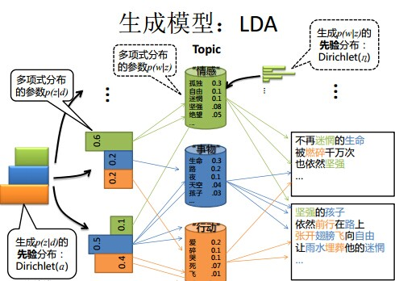
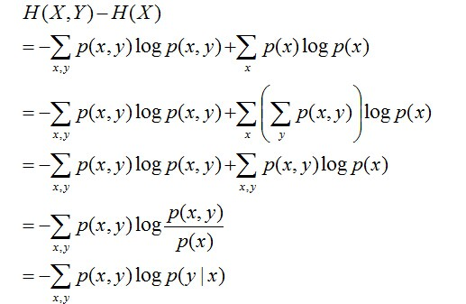
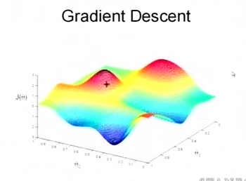
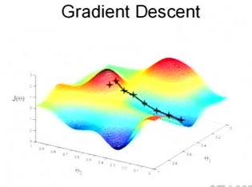
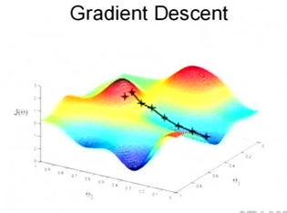
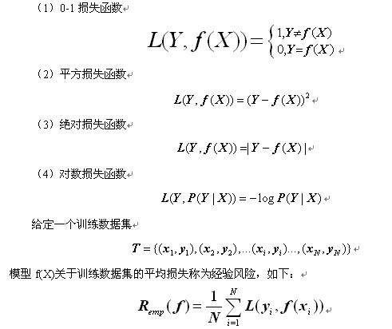

为了求职笔试面试，需恶补基础、算法原理，于是仔细研读了七月在线发布的BAT机器学习面试1000题系列，也添加了一些自己的理解或来自其他博客的答案，以下内容均来自BAT机器学习面试1000题系列。该文为本人的阅读笔记，主要是为了记忆和自查。
前言
July我又回来了。
之前本博客整理过数千道微软等公司的面试题，侧重数据结构、算法、海量数据处理，详见：微软面试100题系列，今17年，近期和团队整理BAT机器学习面试1000题系列，侧重机器学习、深度学习。我们将通过这个系列索引绝大部分机器学习和深度学习的笔试面试题、知识点，它将更是一个足够庞大的机器学习和深度学习面试库/知识库，通俗成体系且循序渐进。
此外，有四点得强调下：
虽然本系列主要是机器学习、深度学习相关的考题，其他类型的题不多，但不代表应聘机器学习或深度学习的岗位时，公司或面试官就只问这两项，虽说是做数据或AI相关，但基本的语言（比如Python）、编码coding能力（对于开发，编码coding能力怎么强调都不过分，比如最简单的手写快速排序、手写二分查找）、数据结构、算法、计算机体系结构、操作系统、概率统计等等也必须掌握。对于数据结构和算法，一者 重点推荐前面说的微软面试100题系列（后来这个系列整理成了新书《编程之法：面试和算法心得》），二者 多刷leetcode，看1000道题不如实际动手刷100道。
本系列会尽量让考察同一个部分（比如同是模型/算法相关的）、同一个方向（比如同是属于最优化的算法）的题整理到一块，为的是让大家做到举一反三、构建完整知识体系，在准备笔试面试的过程中，通过懂一题懂一片。
本系列每一道题的答案都会确保逻辑清晰、通俗易懂（当你学习某个知识点感觉学不懂时，十有八九不是你不够聪明，十有八九是你所看的资料不够通俗、不够易懂），如有更好意见，欢迎在评论下共同探讨。
关于如何学习机器学习，最推荐机器学习集训营系列。从Python基础、数据分析、爬虫，到数据可视化、spark大数据，最后实战机器学习、深度学习等一应俱全。
另，本系列会长久更新，直到上千道、甚至数千道题，欢迎各位于评论下留言分享你在自己笔试面试中遇到的题，或你在网上看到或收藏的题，共同分享帮助全球更多人，thanks。
BAT机器学习面试1000题系列
1. 请简要介绍下SVM。 机器学习 ML模型 易
SVM，全称是support vector machine，中文名叫支持向量机。SVM是一个面向数据（特征空间）的分类算法，它的目标是为确定一个分类超平面（间隔最大化），从而将不同的数据分隔开。
线性可分支持向量机：训练数据线性可分，通过硬间隔最大化，训练得到线性分类器。
线性支持向量机：训练数据近似线性可分，通过软间隔最大化，也可以学习得到线性分类器。
线性不可分支持向量机：训练数据线性不可分，通过核技巧 + 软间隔最大化，学习非线性支持向量机。
《统计学习方法》$P_{96}$-$p_{135}$
支持向量机通俗导论（理解SVM的三层境界）
机器学习之深入理解SVM
纯白板手推SVM
2. 请简要介绍下Tensorflow的计算图。 深度学习 DL框架 中
@寒小阳：Tensorflow是一个通过计算图的形式来表述计算的编程系统，计算图也叫数据流图，可以把计算图看做是一种有向图，Tensorflow中的每一个计算（op）都是计算图上的一个节点，而节点之间的边描述了计算之间的依赖关系。
Tensorflow一般分为两部分：构造计算流图部分 + 通过session输入数据执行构造图中的计算。
TF python库中默认有一个计算图（default graph, tf.get_default_graph() 调用），也可以自定义计算图（tf.Graph()）1
a=x*y;b=a+z;c=tf.reduce_sum(b)


CS 20SI: Tensorflow for Deep Learning Research
tensorflow学习笔记（1）如何高效地学习TensorFlow（附链接）
3. 在k-means或kNN，我们常用欧氏距离来计算最近的邻居之间的距离，有时也用曼哈顿距离，请对比下这两种距离的差别？ 机器学习 ML模型 中
欧氏距离，最常见的两点之间或多点之间的距离表示法，又称之为欧几里得度量、L2距离，它定义于欧几里得空间中，如点 x = (x1,…,xn) 和 y = (y1,…,yn) 之间的距离为：
欧氏距离虽然很有用，但也有明显的缺点。它将样品的不同属性（即各指标或各变量量纲）之间的差别等同看待，这一点有时不能满足实际要求。例如，在教育研究中，经常遇到对人的分析和判别，个体的不同属性对于区分个体有着不同的重要性。因此，欧氏距离适用于向量各分量的度量标准统一的情况。欧氏距离可用于任何空间的距离计算问题(无坐标空间限制)。因为，数据点可以存在于任何空间，欧氏距离是更可行的选择。
曼哈顿距离，我们可以定义曼哈顿距离的正式意义为L1-距离或城市区块距离，也就是在欧几里得空间的固定直角坐标系上两点所形成的线段对轴产生的投影的距离总和。例如在平面上，坐标（x1, y1）的点P1与坐标（x2, y2）的点P2的曼哈顿距离为：$|x_1 - x_2| + |y_1 - y_2|$，要注意的是，曼哈顿距离依赖座标系统的转度，而非系统在座标轴上的平移或映射。当坐标轴变动时，点间的距离就会不同。通俗来讲，想象你在曼哈顿要从一个十字路口开车到另外一个十字路口，驾驶距离是两点间的直线距离吗？显然不是，除非你能穿越大楼。而实际驾驶距离就是这个“曼哈顿距离”，这也是曼哈顿距离名称的来源， 同时，曼哈顿距离也称为城市街区距离(City Block distance)。
曼哈顿距离和欧式距离一般用途不同，无相互替代性。k-means或kNN中，距离的选择也是一个可选超参数。另，关于各种距离的比较参看《从K近邻算法、距离度量谈到KD树、SIFT+BBF算法》。
4. CNN的卷积核是单层的还是多层的？ 深度学习 DL模型 中
@AntZ：卷积运算的定义和理解可以看下这篇文章《CNN笔记：通俗理解卷积神经网络》，在CNN中,卷积计算属于离散卷积, 本来需要卷积核的权重矩阵旋转180度(相关与卷积), 但我们并不需要旋转前的权重矩阵形式, 故直接用旋转后权重矩阵作为卷积核表达, 这样的好处就离散卷积运算变成了矩阵点积运算。
一般而言，深度卷积网络是一层又一层的。层的本质是特征图, 存贮输入数据或其中间表示值。一组卷积核则是联系前后两层的网络参数表达体, 训练的目标就是每个卷积核的权重参数组。
描述网络模型中某层的厚度，通常用名词通道channel数或者特征图feature map数。不过人们更习惯把作为数据输入的前层的厚度称之为通道数（比如RGB三色图层称为输入通道数为3），把作为卷积输出的后层的厚度称之为特征图数。
卷积核(filter)一般是3D多层的，除了面积参数, 比如3x3之外, 还有厚度参数H（2D的视为厚度1). 还有一个属性是卷积核的个数N。
卷积核的厚度H, 一般等于前层厚度M(输入通道数或feature map数). 特殊情况M > H。
卷积核的个数N, 一般等于后层厚度(后层feature maps数，因为相等所以也用N表示)。
卷积核的大小K, 一般为奇数大小（３, ５, ７）的正方形模板。
卷积核通常从属于后层，为后层提供了各种查看前层特征的视角，这个视角是自动形成的。一层的参数为：H x K x K x N个，输出N个feature map
卷积核厚度等于1时为2D卷积，也就是平面对应点分别相乘然后把结果加起来，相当于点积运算. 各种2D卷积动图可以看这里
卷积核厚度大于1时为3D卷积(depth-wise)，每片平面分别求2D卷积，然后把每片卷积结果加起来，作为3D卷积结果；1x1卷积属于3D卷积的一个特例(point-wise)，有厚度无面积, 直接把每层单个点相乘再相加。
归纳之，卷积的意思就是把一个区域，不管是一维线段，二维方阵，还是三维长方块，全部按照卷积核的维度形状，从输入挖出同样维度形状, 对应逐点相乘后求和，浓缩成一个标量值也就是降到零维度，作为输出到一个特征图的一个点的值. 这个很像渔夫收网。
可以比喻一群渔夫坐一个渔船撒网打鱼，鱼塘是多层水域，每层鱼儿不同。
船每次移位一个stride到一个地方，每个渔夫撒一网，得到收获，然后换一个距离stride再撒，如此重复直到遍历鱼塘。
A渔夫盯着鱼的品种，遍历鱼塘后该渔夫描绘了鱼塘的鱼品种分布；
B渔夫盯着鱼的重量，遍历鱼塘后该渔夫描绘了鱼塘的鱼重量分布；
还有N-2个渔夫，各自兴趣各干各的；
最后得到N个特征图，描述了鱼塘的一切！
2D卷积表示渔夫的网就是带一圈浮标的渔网，只打上面一层水体的鱼；
3D卷积表示渔夫的网是多层嵌套的渔网，上中下层水体的鱼儿都跑不掉；
1x1卷积可以视为每次移位stride，甩钩钓鱼代替了撒网；
下面解释一下特殊情况的 M > H：
实际上，除了输入数据的通道数比较少之外，中间层的feature map数很多，这样中间层算卷积会累死计算机（鱼塘太深，每层鱼都打，需要的鱼网太重了）。所以很多深度卷积网络把全部通道/特征图划分一下，每个卷积核只看其中一部分（渔夫A的渔网只打捞深水段，渔夫B的渔网只打捞浅水段）。这样整个深度网络架构是横向开始分道扬镳了，到最后才又融合。这样看来，很多网络模型的架构不完全是突发奇想，而是是被参数计算量逼得。特别是现在需要在移动设备上进行AI应用计算(也叫推断), 模型参数规模必须更小, 所以出现很多减少握手规模的卷积形式, 现在主流网络架构大都如此。比如AlexNet：
5. 关于LR。 机器学习 ML模型 难
@rickjin：把LR从头到脚都给讲一遍。建模，现场数学推导，每种解法的原理，正则化，LR和maxent模型啥关系，lr为啥比线性回归好。有不少会背答案的人，问逻辑细节就糊涂了。原理都会? 那就问工程，并行化怎么做，有几种并行化方式，读过哪些开源的实现。还会，那就准备收了吧，顺便逼问LR模型发展历史。
另外，下面资料可作学习参考：《统计学习方法$P_{77}-P_{94}$》、Logistic Regression 的前世今生（理论篇）、机器学习算法与Python实践之（七）逻辑回归（Logistic Regression）。
6. （过拟合）overfitting怎么解决？机器学习 ML基础 中
@AntZ: overfitting就是过拟合, 也就是随着训练过程的进行，模型复杂度增加，在training data上的error渐渐减小，但是在验证集上的error却反而渐渐增大——因为训练出来的网络过拟合了训练集, 对训练集外的数据却不work, 这称之为泛化(generalization)性能不好。泛化性能是训练的效果评价中的首要目标，没有良好的泛化，就等于南辕北辙, 一切都是无用功。
产生原因：算法的学习能力过强；一些假设条件（如样本独立同分布）可能是不成立的；训练样本过少不能对整个空间进行分布估计。
解决方法：dropout、regularization、batch normalizatin、Early stopping、数据扩增（Data augmentatio）、模型融合、交叉验证、特征选择/特征降维
7. LR和SVM的联系与区别。机器学习 ML模型 中
@朝阳在望，联系：
1、LR和SVM都可以处理分类问题，且一般都用于处理线性二分类问题（在改进的情况下可以处理多分类问题）
2、两个方法都可以增加不同的正则化项，如l1、l2等等。所以在很多实验中，两种算法的结果是很接近的。
3、均属于有监督判别模型。
区别：
1、LR是参数模型，SVM是非参数模型。
2、从目标函数来看，区别在于逻辑回归采用的是logistical loss，SVM采用的是hinge loss + L2，这两个损失函数的目的都是增加对分类影响较大的数据点的权重，减少与分类关系较小的数据点的权重。
3、SVM的处理方法是只考虑support vectors（边界线局部的点），也就是和分类最相关的少数点，去学习分类器。而逻辑回归通过非线性映射，大大减小了离分类平面较远的点的权重，相对提升了与分类最相关的数据点的权重。
4、逻辑回归相对来说模型更简单，好理解，特别是大规模线性分类时比较方便。而SVM的理解和优化相对来说复杂一些，SVM转化为对偶问题后,分类只需要计算与少数几个支持向量的距离,这个在进行复杂核函数计算时优势很明显,能够大大简化模型和计算。
5、logic 能做的 svm能做，但可能在准确率上有问题，svm能做（核方法）的logic有的做不了。来源：机器学习常见面试问题（一）
6、LR输出为概率，SVM输出为类别。
8. 说说你知道的核函数。机器学习 ML基础 易
通常人们会从一些常用的核函数中选择（根据问题和数据的不同，选择不同的参数，实际上就是得到了不同的核函数），例如：
- 多项式核：$K(x, z) = (x\cdot z + 1)^p$，对应的SVM是一个p次多项式分类器。分类决策函数为：$f(x) = sign(\sum_{i=1}^{N_S}a_{i}^{\ast}y_i(x_i \cdot x+1)^p + b^\ast)$
- 高斯核:$K(x, z) = exp(-\frac{||x-z||^2}{2\sigma^2})$，对应的SVM是高斯径向基函数分类器，分类决策函数为：$f(x) = sign(\sum_{i=1}^{N_S}a_{i}^{\ast}y_iexp(-\frac{||x-z||^2}{2\sigma^2}) + b^\ast)$，这个核就是最可以将原始空间映射为无穷维空间的那个家伙。不过，如果$\sigma$选得很大的话，高次特征上的权重实际上衰减得非常快，所以实际上（数值上近似一下）相当于一个低维的子空间；反过来，如果$\sigma$选得很小，则可以将任意的数据映射为线性可分——当然，这并不一定是好事，因为随之而来的可能是非常严重的过拟合问题。不过，总的来说，通过调控参数$\sigma$，高斯核实际上具有相当高的灵活性，也是使用最广泛的核函数之一。下图所示的例子便是把低维线性不可分的数据通过高斯核函数映射到了高维空间：

- 线性核:$K(x_1,x_2) = (x_1, x_2)$，这实际上就是原始空间中的内积。这个核存在的主要目的是使得“映射后空间中的问题”和“映射前空间中的问题”两者在形式上统一起来了(意思是说，咱们有的时候，写代码，或写公式的时候，只要写个模板或通用表达式，然后再代入不同的核，便可以了，于此，便在形式上统一了起来，不用再分别写一个线性的，和一个非线性的)。
9. LR与线性回归的区别与联系。机器学习 ML模型 中等
@AntZ: LR工业上一般指Logistic Regression(逻辑回归)而不是Linear Regression(线性回归). LR在线性回归的实数范围输出值上施加sigmoid函数将值收敛到0~1范围, 其目标函数也因此从差平方和函数变为对数损失函数, 以提供最优化所需导数（sigmoid函数是softmax函数的二元特例, 其导数均为函数值的$f(x)\cdot (1-f(x))$形式）。请注意, LR往往是解决二元0/1分类问题的, 只是它和线性回归耦合太紧, 不自觉也冠了个回归的名字(马甲无处不在). 若要求多元分类,就要把sigmoid换成大名鼎鼎的softmax了。
@nishizhen：个人感觉逻辑回归和线性回归首先都是广义的线性回归，其次经典线性模型的优化目标函数是最小二乘，而逻辑回归则是似然函数，另外线性回归在整个实数域范围内进行预测，敏感度一致，而分类范围，需要在[0,1]。逻辑回归就是一种减小预测范围，将预测值限定为[0,1]间的一种回归模型，因而对于这类问题来说，逻辑回归的鲁棒性比线性回归的要好。
@乖乖癞皮狗：逻辑回归的模型本质上是一个线性回归模型，逻辑回归都是以线性回归为理论支持的。但线性回归模型无法做到sigmoid的非线性形式，sigmoid可以轻松处理0/1分类问题。
10. 请问（决策树、Random Forest、Booting、Adaboot）GBDT和XGBoost的区别是什么？机器学习 ML模型 难
@AntZ:集成学习的集成对象是学习器. Bagging和Boosting属于集成学习的两类方法. Bagging方法有放回地采样同数量样本训练每个学习器, 然后再一起集成(简单投票); Boosting方法使用全部样本(可调权重)依次训练每个学习器, 迭代集成(平滑加权)。
决策树属于最常用的学习器, 其学习过程是从根建立树, 也就是如何决策叶子节点分裂. ID3/C4.5决策树用信息熵计算最优分裂, CART决策树用基尼指数计算最优分裂, xgboost每颗决策树模型使用二阶泰勒展开系数计算最优分裂。
下面所提到的学习器都是决策树:
Bagging方法: 降低方差（variance）
学习器间不存在强依赖关系, 学习器可并行训练生成, 集成方式一般为投票;
Random Forest属于Bagging的代表, 放回抽样, 每个学习器随机选择部分特征去优化;
Boosting方法: 降低偏差（bias）
学习器之间存在强依赖关系、必须串行生成, 集成方式为加权和;
Adaboost属于Boosting, 采用指数损失函数替代原本分类任务的0/1损失函数;
区别：样本量、样本权重、决策方法、可并行性
xgboost属于Boosting的集大成者, 对函数残差近似值进行梯度下降, 迭代时利用了二阶梯度信息, 集成模型可分类也可回归. 由于它可在特征粒度上并行计算, 结构风险和工程实现都做了很多优化, 泛化, 性能和扩展性都比GBDT要好。
关于决策树，这里有篇《决策树算法》。而随机森林Random Forest是一个包含多个决策树的分类器。至于AdaBoost，则是英文”Adaptive Boosting”（自适应增强）的缩写，关于AdaBoost可以看下这篇文章《Adaboost 算法的原理与推导》。GBDT（Gradient Boosting Decision Tree），即梯度上升决策树算法，相当于融合决策树和梯度上升boosting算法。
@Xijun LI：xgboost类似于gbdt的优化版，不论是精度还是效率上都有了提升。与gbdt相比，具体的优点有：
1.损失函数是用泰勒展式二项逼近，而不是像gbdt里的就是一阶导数
2.对树的结构进行了正则化约束，防止模型过度复杂，降低了过拟合的可能性
3.节点分裂的方式不同，gbdt是用的gini系数，xgboost是经过优化推导后的
更多详见：集成学习总结
11. 为什么xgboost要用泰勒展开，优势在哪里？机器学习 ML模型 难
@AntZ：xgboost使用了一阶和二阶偏导, 二阶导数有利于梯度下降的更快更准. 使用泰勒展开取得函数做自变量的二阶导数形式, 可以在不选定损失函数具体形式的情况下, 仅仅依靠输入数据的值就可以进行叶子分裂优化计算, 本质上也就把损失函数的选取和模型算法优化/参数选择分开了. 这种去耦合增加了xgboost的适用性, 使得它按需选取损失函数, 可以用于分类, 也可以用于回归。
12. xgboost如何寻找最优特征？是又放回还是无放回的呢？机器学习 ML模型 难
@AntZ：xgboost在训练的过程中给出各个特征的增益评分，最大增益的特征会被选出来作为分裂依据, 从而记忆了每个特征对在模型训练时的重要性 — 从根到叶子中间节点涉及某特征的次数作为该特征重要性排序.
xgboost属于boosting集成学习方法, 样本是不放回的, 因而每轮计算样本不重复. 另一方面, xgboost支持子采样, 也就是每轮计算可以不使用全部样本, 以减少过拟合. 进一步地, xgboost还有列采样, 每轮计算按百分比随机采样一部分特征, 既提高计算速度又减少过拟合。
13. 谈谈判别式模型和生成式模型？机器学习 ML基础 易
判别方法：由数据直接学习决策函数 Y = f（X），或者由条件分布概率 P（Y|X）作为预测模型，即判别模型。
生成方法：由数据学习联合概率密度分布函数 P（X,Y）,然后求出条件概率分布P(Y|X)作为预测的模型，即生成模型。
由生成模型可以得到判别模型，但由判别模型得不到生成模型。
常见的判别模型有：K近邻、SVM、决策树、感知机、线性判别分析（LDA）、线性回归、传统的神经网络、逻辑斯蒂回归、boosting、条件随机场（CRF）
常见的生成模型有：朴素贝叶斯、隐马尔可夫模型、高斯混合模型、文档主题生成模型（LDA）、限制玻尔兹曼机
14. L1和L2的区别。机器学习 ML基础 易
L1范数（L1 norm）是指向量中各个元素绝对值之和，也有个美称叫“稀疏规则算子”（Lasso regularization）。 比如 向量A=[1，-1，3]， 那么A的L1范数为 |1|+|-1|+|3|.
简单总结一下就是：
L1范数: 为x向量各个元素绝对值之和。
L2范数: 为x向量各个元素平方和的1/2次方，L2范数又称Euclidean范数或者Frobenius范数
Lp范数: 为x向量各个元素绝对值p次方和的1/p次方.
在支持向量机学习过程中，L1范数实际是一种对于成本函数求解最优的过程，因此，L1范数正则化通过向成本函数中添加L1范数，使得学习得到的结果满足稀疏化，从而方便人类提取特征。
L1范数可以使权值稀疏，方便特征提取。
L2范数可以防止过拟合，提升模型的泛化能力。
@AntZ: L1和L2的差别，为什么一个让绝对值最小，一个让平方最小，会有那么大的差别呢？看导数一个是1一个是w便知, 在靠进零附近, L1以匀速下降到零, 而L2则完全停下来了. 这说明L1是将不重要的特征(或者说, 重要性不在一个数量级上)尽快剔除, L2则是把特征贡献尽量压缩最小但不至于为零。 两者一起作用（Elastic Net）, 就是把重要性在一个数量级(重要性最高的)的那些特征一起平等共事(简言之, 不养闲人也不要超人)。
15. L1和L2正则先验分别服从什么分布。机器学习 ML基础 易
@齐同学：面试中遇到的，L1和L2正则先验分别服从什么分布，L1是拉普拉斯分布，L2是高斯分布。
@AntZ: 先验就是优化的起跑线, 有先验的好处就是可以在较小的数据集中有良好的泛化性能，当然这是在先验分布是接近真实分布的情况下得到的了，从信息论的角度看，向系统加入了正确先验这个信息，肯定会提高系统的性能。
对参数引入高斯正态先验分布相当于L2正则化, 这个大家都熟悉，如下图(左)：$f(x) = \frac{1}{\sigma \sqrt{2\pi}}e^{-\frac{(x-\mu)^2}{2\sigma^2}}$,对参数引入拉普拉斯先验等价于 L1正则化, 如下图(右)：$f(x| \mu, b) = \frac{1}{2b}e^{-\frac{|x-\mu|}{b}}$
从上面两图可以看出, L2先验趋向零周围, L1先验趋向零本身。
16. CNN最成功的应用是在CV，那为什么NLP和Speech的很多问题也可以用CNN解出来？为什么AlphaGo里也用了CNN？这几个不相关的问题的相似性在哪里？CNN通过什么手段抓住了这个共性？深度学习 DL应用 难
@许韩，来源：深度学习岗位面试问题整理笔记
- 以上几个不相关问题的相关性在于，都存在局部与整体的关系，由低层次的特征经过组合，组成高层次的特征，并且得到不同特征之间的空间相关性。如下图：低层次的直线／曲线等特征，组合成为不同的形状，最后得到汽车的。
- CNN抓住此共性的手段主要有四个：局部连接／权值共享／池化操作／多层次结构。
- CNN抓住此共性的手段主要有四个：局部连接／权值共享／池化操作／多层次结构。
局部连接使网络可以提取数据的局部特征；权值共享大大降低了网络的训练难度，一个Filter只提取一个特征，在整个图片（或者语音／文本） 中进行卷积；池化操作与多层次结构一起，实现了数据的降维，将低层次的局部特征组合成为较高层次的特征，从而对整个图片进行表示。如下图：
17. 说一下Adaboost，权值更新公式。当弱分类器是$G_m$时，每个样本的的权重是$w_1，w_2…$，请写出最终的决策公式。机器学习 ML模型 难
给定一个训练数据集$T={(x_1,y_1), (x_2,y_2)…(x_N,y_N)}$，其中实例$x \in \mathcal{X}$，而实例空间$\mathcal{X} \subset \mathbb{R}^n$，$y_i$属于标记集合{-1,+1}，Adaboost的目的就是从训练数据中学习一系列弱分类器或基本分类器，然后将这些弱分类器组合成(权值求和)一个强分类器 主要做法是增加难分类样本权重，减小易分类样本权值；加大错误率小的弱分类权值，使其在表决中其较大的作用，减小分类错误率大的弱分类器权值，使其在表决中其较小作用。
Adaboost的算法流程如下：
步骤1. 初始化样本权重。首先，初始化训练数据的权值分布。每一个训练样本最开始时都被赋予相同的权值：1/N。
步骤2. 进行多轮迭代，用$m = 1,2, …, m$表示迭代的第多少轮
a).使用具有权值分布$D_m$的训练数据集学习，得到基本分类器（选取让误差率最低的阈值来设计基本分类器）：
b).计算$G_m(x)$在训练集上的分类误差。
由上述式子可知，$G_m(x)$在训练数据集上的误差率em就是被Gm(x)误分类样本的权值之和。
c).计算$G_m(x)$的系数，$a_m$表示$G_m(x)$在最终分类器中的重要程度（目的：得到基本分类器在最终分类器中所占的权重）：
由上述式子可知，$e_m <= 1/2$时，$a_m >= 0$，且$a_m$随着$e_m$的减小而增大，意味着分类误差率越小的基本分类器在最终分类器中的作用越大。
d).更新训练数据集的权值分布（目的：得到样本的新的权值分布），用于下一轮迭代
使得被基本分类器$G_m(x)$误分类样本的权值增大，而被正确分类样本的权值减小。就这样，通过这样的方式，AdaBoost方法能“重点关注”或“聚焦于”那些较难分的样本上
其中，$Z＿m$是规范化因子，使得$D_{m+1}$成为一个概率分布：
步骤3. 组合各个弱分类器。
从而得到最终分类器，如下：
更多请查看此文：《Adaboost算法的原理与推导》
18. LSTM结构推导，为什么比RNN好？ 深度学习DL模型 难
推导forget gate，input gate，cell state， hidden information等的变化；因为LSTM有进有出且当前的cell informaton是通过input gate控制之后叠加的，RNN是叠乘，因此LSTM可以防止梯度消失或者爆炸。
《深度理解LSTM》
19. 根据谷歌一员工写的How to Write a Spelling Corrector显示，Google的拼写检查基于贝叶斯方法。请说说的你的理解，具体Google是怎么利用贝叶斯方法，实现”拼写检查”的功能。机器学习 ML应用 难
用户输入一个单词时，可能拼写正确，也可能拼写错误。如果把拼写正确的情况记做c（代表correct），拼写错误的情况记做w（代表wrong），那么”拼写检查”要做的事情就是：在发生w的情况下，试图推断出c。换言之：已知w，然后在若干个备选方案中，找出可能性最大的那个c，也就是求$P(c|w)$的最大值。而根据贝叶斯定理，有：
由于对于所有备选的c来说，对应的都是同一个w，所以它们的P(w)是相同的，因此我们只要最大化$P(w|c)P(c)$即可。其中:
P(c)表示某个正确的词的出现”概率”，它可以用”频率”代替。如果我们有一个足够大的文本库，那么这个文本库中每个单词的出现频率，就相当于它的发生概率。某个词的出现频率越高，P(c)就越大。比如在你输入一个错误的词“Julw”时，系统更倾向于去猜测你可能想输入的词是“July”，而不是“Jult”，因为“July”更常见。
P(w|c)表示在试图拼写c的情况下，出现拼写错误w的概率。为了简化问题，假定两个单词在字形上越接近，就有越可能拼错，P(w|c)就越大。举例来说，相差一个字母的拼法，就比相差两个字母的拼法，发生概率更高。你想拼写单词July，那么错误拼成Julw（相差一个字母）的可能性，就比拼成Jullw高（相差两个字母）。值得一提的是，一般把这种问题称为“编辑距离”，参见:]程序员编程艺术第二十八~二十九章：最大连续乘积子串、字符串编辑距离。
所以，我们比较所有拼写相近的词在文本库中的出现频率，再从中挑出出现频率最高的一个，即是用户最想输入的那个词。具体的计算过程及此方法的缺陷请参见How to Write a Spelling Corrector
20. 为什么朴素贝叶斯如此“朴素”？机器学习 ML模型 易
因为它假定所有的特征在数据集中的作用是同样重要和独立的。正如我们所知，这个假设在现实世界中是很不真实的，因此，说朴素贝叶斯真的很“朴素”。
21. 请大致对比下plsa和LDA的区别。机器学习 ML模型 中等
pLSA:主题分布和词分布确定后，以一定的概率$(P(z_k|d_i), P(w_j|z_k))$分别选取具体的主题和词项，生成好文档。而后根据生成好的文档反推其主题分布、词分布时，最终用EM算法（极大似然估计思想）求解出了两个未知但固定的参数的值：(由$P(w_j|z_k)$转换而来)和(由$P(z_k|d_i)$转换而来)。
- 文档d产生主题z的概率，主题z产生单词w的概率都是两个固定的值
举个文档d产生主题z的例子。给定一篇文档d，主题分布是一定的，比如${P(z_i|d), i = 1,2,3 }$可能就是{0.4,0.5,0.1}，表示z1、z2、z3，这3个主题被文档d选中的概率都是个固定的值：$P(z_1|d) = 0.4、P(z_2|d) = 0.5、P(z_3|d) = 0.1$，如下图所示（图截取自沈博PPT上）：
LDA:但在贝叶斯框架下的LDA中，我们不再认为主题分布（各个主题在文档中出现的概率分布）和词分布（各个词语在某个主题下出现的概率分布）是唯一确定的（而是随机变量），而是有很多种可能。但一篇文档总得对应一个主题分布和一个词分布吧，怎么办呢？LDA为它们弄了两个Dirichlet先验参数，这个Dirichlet先验为某篇文档随机抽取出某个主题分布和词分布。 - 文档d产生主题z（准确的说，其实是Dirichlet先验为文档d生成主题分布Θ，然后根据主题分布Θ产生主题z）的概率，主题z产生单词 w的概率都不再是某两个确定的值，而是随机变量。
还是再次举下文档d具体产生主题z的例子。给定一篇文档d，现在有多个主题z1、z2、z3，它们的主题分布${ P(z_i|d), i = 1,2,3 }$可能是{0.4,0.5,0.1}，也可能是{0.2,0.2,0.6}，即这些主题被d选中的概率都不再认为是确定的值，可能是$P(z_1|d) = 0.4、P(z_2|d) = 0.5、P(z_3|d) = 0.1$，也有可能是$P(z_1|d) = 0.2、P(z_2|d) = 0.2、P(z_3|d) = 0.6$等等，而主题分布到底是哪个取值集合我们不确定（为什么？这就是贝叶斯派的核心思想，把未知参数当作是随机变量，不再认为是某一个确定的值），但其先验分布是dirichlet分布，所以可以从无穷多个主题分布中按照dirichlet 先验随机抽取出某个主题分布出来。如下图所示（图截取自沈博PPT上）：

换言之，LDA在pLSA的基础上给这两参数$(P(z_k|d_i), P(w_j|z_k))$加了两个先验分布的参数（贝叶斯化）：一个主题分布的先验分布Dirichlet分布$\alpha$，和一个词语分布的先验分布Dirichlet分布$\beta$。
更多请参见：《通俗理解LDA主题模型》22. 请简要说说EM算法。机器学习 ML模型 中等
@tornadomeet，本题解析来源：机器学习&数据挖掘笔记_16（常见面试之机器学习算法思想简单梳理）
有时候因为样本的产生和隐含变量有关（隐含变量是不能观察的），而求模型的参数时一般采用最大似然估计，由于含有了隐含变量，所以对似然函数参数求导是求不出来的，这时可以采用EM算法来求模型的参数的（对应模型参数个数可能有多个），EM算法一般分为2步：
E步：选取一组参数，求出在该参数下隐含变量的条件概率值；
M步：结合E步求出的隐含变量条件概率，求出似然函数下界函数（本质上是某个期望函数）的最大值。
重复上面2步直至收敛。公式如下所示： M步公式中下界函数的推导过程：
EM算法一个常见的例子就是高斯混合模型(Gaussian Mixed Model, GMM)模型，每个样本都有可能由k个高斯产生，只不过由每个高斯产生的概率不同而已，因此每个样本都有对应的高斯分布（k个中的某一个），此时的隐含变量就是每个样本对应的某个高斯分布。
GMM的E步公式如下（计算每个样本对应每个高斯的概率）：
更具体的计算公式为：
M步公式如下(计算每个高斯的比重，均值，方差这3个参数)：
23. KNN中的K如何选取的？机器学习 ML模型 易
关于什么是KNN，可以查看此文：《从K近邻算法、距离度量谈到KD树、SIFT+BBF算法》。KNN中的K值选取对K近邻算法的结果会产生重大影响。如李航博士的一书「统计学习方法」上所说：
a). 如果选择较小的K值，就相当于用较小的领域中的训练实例进行预测，“学习”近似误差会减小，只有与输入实例较近或相似的训练实例才会对预测结果起作用，与此同时带来的问题是“学习”的估计误差会增大，换句话说，K值的减小就意味着整体模型变得复杂，容易发生过拟合；
b). 如果选择较大的K值，就相当于用较大领域中的训练实例进行预测，其优点是可以减少学习的估计误差，但缺点是学习的近似误差会增大。这时候，与输入实例较远（不相似的）训练实例也会对预测器作用，使预测发生错误，且K值的增大就意味着整体的模型变得简单。
K=N，则完全不足取，因为此时无论输入实例是什么，都只是简单的预测它属于在训练实例中最多的类，模型过于简单，忽略了训练实例中大量有用信息。
在实际应用中，K值一般取一个比较小的数值，例如采用交叉验证法（简单来说，就是一部分样本做训练集，一部分做测试集）来选择最优的K值。
24. 机器学习中，为何要经常对数据做归一化。机器学习 ML基础 中等
@zhanlijun，参考链接：为什么一些机器学习模型需要对数据进行归一化？
1）归一化后加快了梯度下降求最优解的速度；2）归一化有可能提高精度。
常见归一化类型：线性归一化、标准差标准化、非线性归一化。
25. 谈谈深度学习中的归一化问题。深度学习 DL基础 易
详情参见此视频：深度学习中的归一化
26. 哪些机器学习算法不需要做归一化处理？机器学习 ML基础 易
概率模型不需要归一化，因为它们不关心变量的值，而是关心变量的分布和变量之间的条件概率，如决策树、rf。而像adaboost、svm、lr、KNN、KMeans之类的最优化问题就需要归一化。比如说LR，我有两个特征，一个是(0,1)的，一个是(0,10000)的，这样运用梯度下降时候，损失等高线是一个椭圆的形状，这样我想迭代到最优点，就需要很多次迭代，但是如果进行了归一化，那么等高线就是圆形的，那么SGD就会往原点迭代，需要的迭代次数较少（加快了梯度下降求最优解的速度）。
另外，注意树模型是不能进行梯度下降的，因为树模型是阶跃的，阶跃点是不可导的，并且求导没意义，所以树模型（回归树）寻找最优点事通过寻找最优分裂点完成的。
@管博士：我理解归一化和标准化主要是为了使计算更方便 比如两个变量的量纲不同 可能一个的数值远大于另一个那么他们同时作为变量的时候 可能会造成数值计算的问题，比如说求矩阵的逆可能很不精确 或者梯度下降法的收敛比较困难，还有如果需要计算欧式距离的话可能 量纲也需要调整 所以我估计lr 和 knn 标准化一下应该有好处。至于其他的算法 我也觉得如果变量量纲差距很大的话 先标准化一下会有好处。
@寒小阳：一般我习惯说树形模型，这里说的概率模型可能是差不多的意思。
27. 请简要说说一个完整机器学习项目的流程。机器学习 ML应用 中
a). 抽象成数学问题
明确问题是进行机器学习的第一步。机器学习的训练过程通常都是一件非常耗时的事情，胡乱尝试时间成本是非常高的。
这里的抽象成数学问题，指的我们明确我们可以获得什么样的数据，目标是一个分类还是回归或者是聚类的问题，如果都不是的话，如何划归为其中的某类问题。
b). 获取数据
数据决定了机器学习结果的上限，而算法只是尽可能逼近这个上限。
数据要有代表性，否则必然会过拟合。
而且对于分类问题，数据偏斜不能过于严重，不同类别的数据数量不要有数个数量级的差距。(类别均衡)
而且还要对数据的量级有一个评估，多少个样本，多少个特征，可以估算出其对内存的消耗程度，判断训练过程中内存是否能够放得下。如果放不下就得考虑改进算法或者使用一些降维的技巧了。如果数据量实在太大，那就要考虑分布式了。
c). 特征预处理与特征选择（特征工程）
良好的数据要能够提取出良好的特征才能真正发挥效力。
特征预处理、数据清洗是很关键的步骤，往往能够使得算法的效果和性能得到显著提高。归一化、离散化、因子化、缺失值处理、去除共线性等，数据挖掘过程中很多时间就花在它们上面。这些工作简单可复制，收益稳定可预期，是机器学习的基础必备步骤。
特征选择: 筛选出显著特征、摒弃非显著特征，需要机器学习工程师反复理解业务。这对很多结果有决定性的影响。特征选择好了，非常简单的算法也能得出良好、稳定的结果。这需要运用特征有效性分析的相关技术，如相关系数、卡方检验、平均互信息、条件熵、后验概率、逻辑回归权重等方法。
d). 训练模型与调优
直到这一步才用到我们上面说的算法进行训练。现在很多算法都能够封装成黑盒供人使用。但是真正考验水平的是调整这些算法的（超）参数（调参），使得结果变得更加优良。这需要我们对算法的原理有深入的理解。理解越深入，就越能发现问题的症结，提出良好的调优方案。
e). 模型诊断
如何确定模型调优的方向与思路呢？这就需要对模型进行诊断的技术。
过拟合、欠拟合 判断是模型诊断中至关重要的一步。常见的方法如交叉验证，绘制学习曲线等。过拟合的基本调优思路是增加数据量，降低模型复杂度。欠拟合的基本调优思路是提高特征数量和质量，增加模型复杂度。
误差分析也是机器学习至关重要的步骤。通过观察误差样本，全面分析误差产生误差的原因:是参数的问题还是算法选择的问题，是特征的问题还是数据本身的问题……
诊断后的模型需要进行调优，调优后的新模型需要重新进行诊断，这是一个反复迭代不断逼近的过程，需要不断地尝试， 进而达到最优状态。
f). 模型融合
一般来说，模型融合后都能使得效果有一定提升。而且效果很好。
工程上，主要提升算法准确度的方法是分别在模型的前端（特征清洗和预处理，不同的采样模式）与后端（模型融合）上下功夫【特征工程 + 模型融合】。因为他们比较标准可复制，效果比较稳定。而直接调参的工作不会很多，毕竟大量数据训练起来太慢了，而且效果难以保证。
g).上线运行
这一部分内容主要跟工程实现的相关性比较大。工程上是结果导向，模型在线上运行的效果直接决定模型的成败。不单纯包括其准确程度、误差等情况，还包括其运行的速度(时间复杂度)、资源消耗程度（空间复杂度）、稳定性是否可接受。
这些工作流程主要是工程实践上总结出的一些经验。并不是每个项目都包含完整的一个流程。这里的部分只是一个指导性的说明，只有大家自己多实践，多积累项目经验，才会有自己更深刻的认识。
故，基于此，七月在线每一期ML算法班都特此增加特征工程、模型调优等相关课。比如，这里有个公开课视频《特征处理与特征选择》。
28. 逻辑斯特回归为什么要对特征进行离散化。机器学习 ML模型 中等
@严林，本题解析来源：https://www.zhihu.com/question/31989952
在工业界，很少直接将连续值作为逻辑回归模型的特征输入，而是将连续特征离散化为一系列0、1特征交给逻辑回归模型，这样做的优势有以下几点：
0. 离散特征的增加和减少都很容易，易于模型的快速迭代；
1. 稀疏向量内积乘法运算速度快，计算结果方便存储，容易扩展；
2. 离散化后的特征对异常数据有很强的鲁棒性：比如一个特征是年龄>30是1，否则0。如果特征没有离散化，一个异常数据“年龄300岁”会给模型造成很大的干扰；
3. 逻辑回归属于广义线性模型，表达能力受限；单变量离散化为N个后，每个变量有单独的权重，相当于为模型引入了非线性，能够提升模型表达能力，加大拟合；
4. 离散化后可以进行特征交叉，由M+N个变量变为M*N个变量，进一步引入非线性，提升表达能力；
5. 特征离散化后，模型会更稳定，比如如果对用户年龄离散化，20-30作为一个区间，不会因为一个用户年龄长了一岁就变成一个完全不同的人。当然处于区间相邻处的样本会刚好相反，所以怎么划分区间是门学问；
6. 特征离散化以后，起到了简化了逻辑回归模型的作用，降低了模型过拟合的风险。
李沐曾经说过：模型是使用离散特征还是连续特征，其实是一个“海量离散特征+简单模型” 同 “少量连续特征+复杂模型”的权衡。既可以离散化用线性模型，也可以用连续特征加深度学习。就看是喜欢折腾特征还是折腾模型了。通常来说，前者容易，而且可以n个人一起并行做，有成功经验；后者目前看很赞，能走多远还须拭目以待。
29. 下列哪个不属于CRF模型对于HMM和MEMM模型的优势（B） 机器学习 ML模型 中等
A. 特征灵活 B. 速度快 C. 可容纳较多上下文信息 D. 全局最优
CRF 的优点：特征灵活，可以容纳较多的上下文信息，能够做到全局最优CRF 的缺点：速度慢
首先，CRF(条件随机场)，HMM(隐马模型)，MEMM(最大熵隐马模型)都常用来做序列标注的建模.
隐马模型一个最大的缺点就是由于其输出独立性假设，导致其不能考虑上下文的特征，限制了特征的选择
最大熵隐马模型则解决了隐马的问题，可以任意选择特征，但由于其在每一节点都要进行归一化，所以只能找到局部的最优值，同时也带来了标记偏见的问题，即凡是训练语料中未出现的情况全都忽略掉
条件随机场则很好的解决了这一问题，他并不在每一个节点进行归一化，而是所有特征进行全局归一化，因此可以求得全局的最优值。
此外《机器学习工程师第八期》里有讲概率图模型。
30. 什么是熵。机器学习 ML基础 易
熵的概念最早起源于物理学，用于度量一个热力学系统的无序程度。在信息论里面，熵是对不确定性的测量。
1948年，香农Claude E. Shannon引入信息（熵），将其定义为离散随机事件的出现概率。一个系统越是有序，信息熵就越低；反之，一个系统越是混乱，信息熵就越高。所以说，信息熵可以被认为是系统有序化程度的一个度量。
信息熵计算公式：$H(x) = -\sum P(x_i)\log(p(x_i)), (i=1,2,…n)$
更多请查看《最大熵模型中的数学推导》。
31. 熵、联合熵、条件熵、相对熵、互信息的定义。机器学习 ML基础 中等
为了更好的理解，需要了解的概率必备知识有：
a). 大写字母X表示随机变量，小写字母x表示随机变量X的某个具体的取值；
b). P(X)表示随机变量X的概率分布，P(X,Y)表示随机变量X、Y的联合概率分布，P(Y|X)表示已知随机变量X的情况下随机变量Y的条件概率分布；
c). p(X = x)表示随机变量X取某个具体值的概率，简记为p(x)；
d). p(X = x, Y = y) 表示联合概率，简记为p(x,y)，p(Y = y|X = x)表示条件概率，简记为p(y|x)，且有：p(x,y) = p(x) p(y|x)。
*熵：如果一个随机变量X的可能取值为$X = \{x_1, x_2,…, x_k\}$，其概率分布为$P(X = x_i) = p_i（i = 1,2, …, n），则随机变量X的熵定义为：
联合熵：两个随机变量X，Y的联合分布，可以形成联合熵Joint Entropy，用H(X,Y)表示。
条件熵：在随机变量X发生的前提下，随机变量Y发生所新带来的熵定义为Y的条件熵，用H(Y|X)表示，用来衡量在已知随机变量X的条件下随机变量Y的不确定性。且有此式子成立：$H(Y|X) = H(X,Y) – H(X)$，整个式子表示(X,Y)发生所包含的熵减去X单独发生包含的熵。至于怎么得来的请看推导：

简单解释下上面的推导过程。整个式子共6行，其中:
第二行推到第三行的依据是边缘分布p(x)等于联合分布p(x,y)的和；
第三行推到第四行的依据是把公因子logp(x)乘进去，然后把x,y写在一起；
第四行推到第五行的依据是：因为两个sigma都有p(x,y)，故提取公因子p(x,y)放到外边，然后把里边的-（log p(x,y) - log p(x)）写成- log (p(x,y)/p(x) ) ；
第五行推到第六行的依据是：p(x,y) = p(x) p(y|x)，故p(x,y) / p(x) = p(y|x)。
*相对熵：又称互熵，交叉熵，鉴别信息，Kullback熵，Kullback-Leible散度等。设p(x)、q(x)是X中取值的两个概率分布，则p对q的相对熵是：
在一定程度上，相对熵可以度量两个随机变量的“距离”，且有D(p||q) ≠D(q||p)。另外，值得一提的是，D(p||q)是必然大于等于0的。
互信息：两个随机变量X，Y的互信息定义为X，Y的联合分布和各自独立分布乘积的相对熵，用I(X,Y)表示：
且有I(X,Y)=D(P(X,Y) || P(X)P(Y))。下面，咱们来计算下H(Y)-I(X,Y)的结果，如下：
通过上面的计算过程，我们发现竟然有H(Y)-I(X,Y) = H(Y|X)。故通过条件熵的定义，有：H(Y|X) = H(X,Y) - H(X)，而根据互信息定义展开得到H(Y|X) = H(Y) - I(X,Y)，把前者跟后者结合起来，便有I(X,Y)= H(X) + H(Y) - H(X,Y)，此结论被多数文献作为互信息的定义。更多请查看《最大熵模型中的数学推导》。
32. 什么是最大熵。机器学习 ML基础 易
熵是随机变量不确定性的度量，不确定性越大，熵值越大；若随机变量退化成定值，熵为0。如果没有外界干扰，随机变量总是趋向于无序，在经过足够时间的稳定演化，它应该能够达到的最大程度的熵。
为了准确的估计随机变量的状态，我们一般习惯性最大化熵，认为在所有可能的概率模型（分布）的集合中，熵最大的模型是最好的模型。换言之，在已知部分知识的前提下，关于未知分布最合理的推断就是符合已知知识最不确定或最随机的推断，其原则是承认已知事物（知识），且对未知事物不做任何假设，没有任何偏见。
例如，投掷一个骰子，如果问”每个面朝上的概率分别是多少”，你会说是等概率，即各点出现的概率均为1/6。因为对这个”一无所知”的色子，什么都不确定，而假定它每一个朝上概率均等则是最合理的做法。从投资的角度来看，这是风险最小的做法，而从信息论的角度讲，就是保留了最大的不确定性，也就是说让熵达到最大。
33. 了解正则化么。机器学习 ML基础 易
正则化是针对过拟合而提出的，以为在求解模型最优的是一般优化最小的经验风险，现在在该经验风险上加入模型复杂度这一项（正则化项是模型参数向量的范数），并使用一个rate比率来权衡模型复杂度与以往经验风险的权重，如果模型复杂度越高，结构化的经验风险会越大，现在的目标就变为了结构经验风险的最优化，可以防止模型训练过度复杂，有效的降低过拟合的风险。
奥卡姆剃刀原理，能够很好的解释已知数据并且十分简单才是最好的模型。
34. 协方差和相关性有什么区别？机器学习 ML基础 易
相关性是协方差的标准化格式。协方差本身很难做比较。例如：如果我们计算工资（$）和年龄（岁）的协方差，因为这两个变量有不同的度量，所以我们会得到不能做比较的不同的协方差。
为了解决这个问题，我们计算相关性来得到一个介于-1和1之间的值，就可以忽略它们各自不同的度量。
35. 线性分类器与非线性分类器的区别以及优劣。机器学习 ML基础 易
@伟祺，线性和非线性是针对，模型参数和输入特征来讲的；比如输入x，模型y=ax+ax^2那么就是非线性模型，如果输入是x和X^2则模型是线性的。
线性分类器可解释性好，计算复杂度较低，不足之处是模型的拟合效果相对弱些。
非线性分类器效果拟合能力较强，不足之处是数据量不足容易过拟合、计算复杂度高、可解释性不好。
常见的线性分类器有：LR,贝叶斯分类，单层感知机、线性回归（）
常见的非线性分类器：决策树、RF、GBDT、多层感知机(非线性激活函数)
SVM两种都有（看线性核还是高斯核）
36. 简单说说贝叶斯定理。机器学习 ML模型 易
在引出贝叶斯定理之前，先学习几个定义：
条件概率（又称后验概率）就是事件A在另外一个事件B已经发生条件下的发生概率。条件概率表示为P(A|B)，读作“在B条件下A的概率”。
比如，在同一个样本空间Ω中的事件或者子集A与B，如果随机从Ω中选出的一个元素属于B，那么这个随机选择的元素还属于A的概率就定义为在B的前提下A的条件概率，所以：P(A|B) = |A∩B|/|B|，接着分子、分母都除以|Ω|得到
联合概率表示两个事件共同发生的概率。A与B的联合概率表示为$P(A∩B)$或者$P(A，B)$。
边缘概率（又称先验概率）是某个事件发生的概率。边缘概率是这样得到的：在联合概率中，把最终结果中那些不需要的事件通过合并成它们的全概率，而消去它们（对离散随机变量用求和得全概率，对连续随机变量用积分得全概率），这称为边缘化（marginalization），比如A的边缘概率表示为P(A)，B的边缘概率表示为P(B)。
接着，考虑一个问题：P(A|B)是在B发生的情况下A发生的可能性。
首先，事件B发生之前，我们对事件A的发生有一个基本的概率判断，称为A的先验概率，用P(A)表示；
其次，事件B发生之后，我们对事件A的发生概率重新评估，称为A的后验概率，用P(A|B)表示；
类似的，事件A发生之前，我们对事件B的发生有一个基本的概率判断，称为B的先验概率，用P(B)表示；
同样，事件A发生之后，我们对事件B的发生概率重新评估，称为B的后验概率，用P(B|A)表示。
贝叶斯定理的公式表达式：
所以，贝叶斯公式可以直接根据条件概率的定义直接推出。即因为P(A,B) = P(A)P(B|A) = P(B)P(A|B)，所以P(A|B) = P(A)P(B|A) / P(B)。更多请参见此文：《从贝叶斯方法谈到贝叶斯网络》。
37. 某超市研究销售纪录数据后发现，买啤酒的人很大概率也会购买尿布，这种属于数据挖掘的哪类问题？(A) 数据挖掘 DM模型 易
A. 关联规则发现 B. 聚类 C. 分类 D. 自然语言处理
38. 将原始数据进行集成、变换、维度规约、数值规约是在以下哪个步骤的任务？(C) 数据挖掘 DM基础 易
A. 频繁模式挖掘 B. 分类和预测 C. 数据预处理 D. 数据流挖掘
39. 下面哪种不属于数据预处理的方法？ (D) 数据挖掘 DM基础 易
A. 变量代换 B. 离散化 C. 聚集 D. 估计遗漏值
40. 什么是KDD？ (A) 数据挖掘 DM基础 易
A. 数据挖掘与知识发现 B. 领域知识发现 C. 文档知识发现 D. 动态知识发现
41. 当不知道数据所带标签时，可以使用哪种技术促使带同类标签的数据与带其他标签的数据相分离？(B) 数据挖掘 DM模型 易
A. 分类 B. 聚类 C. 关联分析 D. 隐马尔可夫链
42. 建立一个模型，通过这个模型根据已知的变量值来预测其他某个变量值属于数据挖掘的哪一类任务？(C) 数据挖掘 DM基础 易
A. 根据内容检索 B. 建模描述 C. 预测建模 D. 寻找模式和规则
43. 以下哪种方法不属于特征选择的标准方法： (D) 数据挖掘 DM基础 易
A. 嵌入 B. 过滤 C. 包装 D. 抽样
44. 请用python编写函数find_string，从文本中搜索并打印内容，要求支持通配符星号和问号。Python Python语言 易
1 | find_string('hello\nworld\n','wor') |
45. 简单说下sigmoid激活函数。深度学习 DL基础 易
常用的非线性激活函数有sigmoid、tanh、relu等等，前两者sigmoid/tanh比较常见于全连接层，后者relu常见于卷积层。这里先简要介绍下最基础的sigmoid函数（btw，在本博客中SVM那篇文章开头有提过）。
sigmoid的函数表达式如下：
其中z是一个线性组合，比如z可以等于：$z = wx + b$。通过代入很大的正数或很小的负数到g(z)函数中可知，其结果趋近于0或1。
因此，sigmoid函数g(z)的图形表示如下（ 横轴表示定义域z，纵轴表示值域g(z) ）：
也就是说，sigmoid函数的功能是相当于把一个实数压缩至0到1之间。当z是非常大的正数时，g(z)会趋近于1，而z是非常小的负数时，则g(z)会趋近于0。
压缩至0到1有何用处呢？用处是这样一来便可以把激活函数看作一种“分类的概率”，比如激活函数的输出为0.9的话便可以解释为90%的概率为正样本。
举个例子，如下图（图引自Stanford机器学习公开课）
$z = b + w_1 \cdot x_1 + w_2 \cdot x_2$，其中b为偏置项，假定取-30，$w_1,w_2$都取为20
- 如果 = 0 = 0，则z = -30，g(z) = 1/( 1 + e^-z )趋近于0。此外，从上图sigmoid函数的图形上也可以看出，当z=-30的时候，g(z)的值趋近于0
- 如果 = 0 = 1，或 =1 = 0，则z = b + + = -30 + 20 = -10，同样，g(z)的值趋近于0
- 如果 = 1 = 1，则z = b + + = -30 + 201 + 201 = 10，此时，g(z)趋近于1。
- 换言之，只有和都取1的时候，g(z)→1，判定为正样本；或取0的时候，g(z)→0，判定为负样本，如此达到分类的目的。
综上，sigmod函数，是逻辑斯蒂回归的压缩函数，它的性质是可以把分隔平面压缩到[0,1]区间一个数（向量），在线性分割平面值为0时候正好对应sigmod值为0.5，大于0对应sigmod值大于0.5、小于0对应sigmod值小于0.5；0.5可以作为分类的阀值；exp的形式最值求解时候比较方便，用相乘形式作为logistic损失函数，使得损失函数是凸函数；不足之处是sigmod函数在y趋于0或1时候有死区，控制不好在bp形式传递loss时候容易造成梯度弥撒。
导数：g(x)(1 - g(x))
46. 什么是卷积。深度学习 DL基础 易
对图像（不同的数据窗口数据）和滤波矩阵（一组固定的权重：因为每个神经元的多个权重固定，所以又可以看做一个恒定的滤波器filter）做内积（逐个元素相乘再求和）的操作就是所谓的『卷积』操作，也是卷积神经网络的名字来源。
非严格意义上来讲，下图中红框框起来的部分便可以理解为一个滤波器，即带着一组固定权重的神经元。多个滤波器叠加便成了卷积层。
OK，举个具体的例子。比如下图中，图中左边部分是原始输入数据(三通道)，图中中间部分是滤波器filter（shape：3，3,3,2），图中右边是输出的feature map。
中间滤波器filter与数据窗口做内积，对应位置相乘相加（二维空间 + 通道），卷积核大小若为1x1，就相当于通道同一位置乘一个系数相加
47. 什么是CNN的池化pool层。深度学习 DL模型 易
池化，简言之，即取区域平均或最大，如下图所示（图引自cs231n）
*CNN网络的pooling层有什么用：
1. invariance(不变性)，这种不变性包括translation(平移)，rotation(旋转)，scale(尺度)
2. 保留主要的特征同时减少参数(降维，效果类似PCA)和计算量，防止过拟合，提高模型泛化能力
*缺陷：丢失信息
上图所展示的是取区域最大，即上图左边部分中 左上角2x2的矩阵中6最大，右上角2x2的矩阵中8最大，左下角2x2的矩阵中3最大，右下角2x2的矩阵中4最大，所以得到上图右边部分的结果：6 8 3 4。很简单不是？
48. 简述下什么是生成对抗网络（GAN）。深度学习 DL扩展 中
GAN之所以是对抗的，是因为GAN的内部是竞争关系(引入博弈论的思想)，一方叫generator，它的主要工作是生成图片，并且尽量使得其看上去是来自于训练样本的。另一方是discriminator，其目标是判断输入图片是否属于真实训练样本。
更直白的讲，将generator想象成假币制造商，而discriminator是警察。generator目的是尽可能把假币造的跟真的一样，从而能够骗过discriminator，即生成样本并使它看上去好像来自于真实训练样本一样。discriminator就是为了尽可能的区分假币与真币。
如下图中的左右两个场景：
48. 学梵高作画的原理是啥？深度学习 DL应用 难
这里有篇如何做梵高风格画的实验教程《教你从头到尾利用DL学梵高作画：GTX 1070 cuda 8.0 tensorflow gpu版》，至于其原理请看这个视频：NeuralStyle艺术化图片（学梵高作画背后的原理）。
风格迁移论文：《A Neural Algorithm of Artistic Style》
《Perceptual Losses for Real-Time Style Transfer and Super-Resolution》
《Learning Linear Transformations for Fast Arbitrary Style Transfer》
49. 现在有 a 到 z 26 个元素， 编写程序打印 a 到 z 中任取 3 个元素的组合（比如 打印 a b c ，d y z等） 数理逻辑 排列组合 中
解析参考：一道百度机器学习工程师职位的面试题
50. 说说梯度下降法。机器学习 ML基础 中
@LeftNotEasy，本题解析来源：机器学习中的数学(1)-回归(regression)、梯度下降(gradient descent)，下面是一个典型的机器学习的过程，首先给出一个输入数据，我们的算法会通过一系列的过程得到一个估计函数，这个函数有能力对没有见过的新数据给出一个新的估计，也被称为构建一个模型。
我们用$X_1，X_2…X_n$去描述feature里面的分量，比如x1=房间的面积，x2=房间的朝向等等，我们可以做出一个估计函数：
θ在这儿称为参数，在这儿的意思是调整feature中每个分量的影响力，就是到底是房屋的面积更重要还是房屋的地段更重要。如果我们令$x_0 = 1$，就可以用向量的方式来表示了：
我们程序也需要一个机制去评估我们θ是否比较好，所以说需要对我们做出的h函数进行评估，一般这个进行评估的函数称为损失函数（loss function），描述h函数不好的程度，在下面，我们称这个函数为J函数
在这儿我们可以做出下面的一个损失函数（MSE）:
换言之，我们把对$x_i$的估计值$h(x_i)$与真实值$y_i$差的平方和作为损失函数，前面乘上的1/2是为了在求导的时候，这个系数就不见了(便于求导)。
如何调整θ以使得J(θ)取得最小值有很多方法，其中有最小二乘法(min square)，是一种完全是数学描述的方法，另外一种就是梯度下降法。
梯度下降法的算法流程如下：
1）初始化：首先对θ赋值，这个值可以是随机的，也可以让θ是一个全零的向量。
2）更新：改变θ的值，使得J(θ)按梯度下降的方向进行减少。
为了描述的更清楚，给出下面的图：

这是一个表示参数θ与误差函数J(θ)的关系图，红色的部分是表示J(θ)有着比较高的取值，我们需要的是，能够让J(θ)的值尽量的低，也就是达到深蓝色的部分。$θ_0，θ_1$表示θ向量的两个维度。
在上面提到梯度下降法的第一步是给θ给一个初值，假设随机给的初值是在图上的十字点。
然后我们将θ按照梯度下降的方向进行调整，就会使得J(θ)往更低的方向进行变化，如下图（左）所示，算法的结束将是在θ下降到无法继续下降为止。 

当然，可能梯度下降的最终点并非是全局最小点，即也可能是一个局部最小点，如上图（右）所示。这张图就是描述的一个局部最小点，这是我们重新选择了一个初始点得到的，看来我们这个算法将会在很大的程度上被初始点的选择影响而陷入局部最小点。
下面我将用一个例子描述一下梯度减少的过程，对于我们的函数J(θ)求偏导J：
下面是更新的过程，也就是θi会向着梯度最小的方向进行减少。θi表示更新之前的值，-后面的部分表示按梯度方向减少的量，α表示步长，也就是每次按照梯度减少的方向变化多少。
一个很重要的地方值得注意的是，梯度是有方向的，对于一个向量θ，每一维分量θi都可以求出一个梯度的方向，我们就可以找到一个整体的方向，在变化的时候，我们就朝着下降最多的方向进行变化就可以达到一个最小点，不管它是局部的还是全局的。
用更简单的数学语言进行描述步骤2）是这样的：
51. 梯度下降法找到的一定是下降最快的方向么？机器学习 ML基础 中
梯度下降法并不是下降最快的方向，它只是目标函数在当前的点的切平面（当然高维问题不能叫平面）上下降最快的方向。在practical implementation中，牛顿方向（考虑海森矩阵）才一般被认为是下降最快的方向，可以达到superlinear的收敛速度。梯度下降类的算法的收敛速度一般是linear甚至sublinear的（在某些带复杂约束的问题）。by林小溪。
一般解释梯度下降，会用下山来举例。假设你现在在山顶处，必须抵达山脚下（也就是山谷最低处）的湖泊。但让人头疼的是，你的双眼被蒙上了无法辨别前进方向。换句话说，你不再能够一眼看出哪条路径是最快的下山路径，如下图:
最好的办法就是走一步算一步，先用脚向四周各个方向都迈出一步，试探一下周围的地势，用脚感觉下哪个方向是下降最大的方向。换言之，每走到一个位置的时候，求解当前位置的梯度，沿着梯度的负方向（当前最陡峭的位置向下）走一步。就这样，每要走一步都根据上一步所在的位置选择当前最陡峭最快下山的方向走下一步，一步步走下去，一直走到我们感觉已经到了山脚。
当然这样走下去，我们走到的可能并不一定是真正的山脚，而只是走到了某一个局部的山峰低处。换句话说，梯度下降不一定能够找到全局的最优解，也有可能只是一个局部最优解。当然，如果损失函数是凸函数，梯度下降法得到的解就一定是全局最优解。
参考：一文清晰讲解机器学习中梯度下降算法（包括其变式算法）
52. 随机梯度下降
普通的梯度下降算法在更新回归系数时要遍历整个数据集，是一种批处理方法，这样训练数据特别忙庞大时，可能出现如下问题：
1）收敛过程可能非常慢；
2）如果误差曲面上有多个局极小值，那么不能保证这个过程会找到全局最小值。
为了解决上面的问题，实际中我们应用的是梯度下降的一种变体被称为随机梯度下降。
上面公式中的误差是针对于所有训练样本而得到的，而随机梯度下降的思想是根据每个单独的训练样本来更新权值，这样我们上面的梯度公式就变成了：
参考：梯度下降与随机梯度下降
53. 牛顿法和梯度下降法有什么不同。机器学习 ML基础 中
1）牛顿法（Newton’s method）
牛顿法是一种在实数域和复数域上近似求解方程的方法。方法使用函数f(x)的泰勒级数的前面几项来寻找方程f(x) = 0的根。牛顿法最大的特点就在于它的收敛速度很快。
具体步骤：
首先，选择一个接近函数f(x)零点的x0，计算相应的f(x0)和切线斜率f’(x0)（这里f’表示函数f的导数）。然后我们计算穿过点(x0, f(x0))并且斜率为f ‘(x0)的直线和x轴的交点的x坐标，也就是求如下方程的解：
我们将新求得的点的ｘ坐标命名为x1，通常x1会比x0更接近方程f(x)=0的解。因此我们现在可以利用x1开始下一轮迭代。迭代公式可化简为如下所示：
已经证明，如果f’是连续的，并且待求的零点x是孤立的，那么在零点x周围存在一个区域，只要初始值x0位于这个邻近区域内，那么牛顿法必定收敛。 并且，如果f’(x)不为0, 那么牛顿法将具有平方收敛的性能. 粗略的说，这意味着每迭代一次，牛顿法结果的有效数字将增加一倍。
由于牛顿法是基于当前位置的切线来确定下一次的位置，所以牛顿法又被很形象地称为是”切线法”。牛顿法的搜索路径（二维情况）如下图所示：
关于牛顿法和梯度下降法的效率对比：
a). 从收敛速度上看 ，牛顿法是二阶收敛，梯度下降是一阶收敛，前者牛顿法收敛速度更快。但牛顿法仍然是局部算法，只是在局部上看的更细致，梯度法仅考虑方向，牛顿法不但考虑了方向还兼顾了步子的大小，其对步长的估计使用的是二阶逼近。
b). 根据wiki上的解释，从几何上说，牛顿法就是用一个二次曲面去拟合你当前所处位置的局部曲面，而梯度下降法是用一个平面去拟合当前的局部曲面，通常情况下，二次曲面的拟合会比平面更好，所以牛顿法选择的下降路径会更符合真实的最优下降路径。
注：红色的牛顿法的迭代路径，绿色的是梯度下降法的迭代路径。
牛顿法的优缺点总结：
优点：二阶收敛，收敛速度快；
缺点：牛顿法是一种迭代算法，每一步都需要求解目标函数的Hessian矩阵的逆矩阵，计算比较复杂。
54. 什么是拟牛顿法（Quasi-Newton Methods）？机器学习 ML基础 中
@wtq1993，机器学习中常见的最优化算法
拟牛顿法是求解非线性优化问题最有效的方法之一，于20世纪50年代由美国Argonne国家实验室的物理学家W.C.Davidon所提出来。Davidon设计的这种算法在当时看来是非线性优化领域最具创造性的发明之一。不久R. Fletcher和M. J. D. Powell证实了这种新的算法远比其他方法快速和可靠，使得非线性优化这门学科在一夜之间突飞猛进。
拟牛顿法的本质思想是改善牛顿法每次需要求解复杂的Hessian矩阵的逆矩阵的缺陷，它使用正定矩阵来近似Hessian矩阵的逆，从而简化了运算的复杂度。拟牛顿法和最速下降法一样只要求每一步迭代时知道目标函数的梯度。通过测量梯度的变化，构造一个目标函数的模型使之足以产生超线性收敛性。这类方法大大优于最速下降法，尤其对于困难的问题。另外，因为拟牛顿法不需要二阶导数的信息，所以有时比牛顿法更为有效。如今，优化软件中包含了大量的拟牛顿算法用来解决无约束，约束，和大规模的优化问题。
具体步骤：
拟牛顿法的基本思想如下。首先构造目标函数在当前迭代$x_k$的二次模型：
这里$B_K$是一个对称正定矩阵，于是我们取这个二次模型的最优解作为搜索方向，并且得到新的迭代点：
其中我们要求步长$\alpha_k$，满足Wolfe条件。这样的迭代与牛顿法类似，区别就在于用近似的Hessian矩阵Bk
代替真实的Hessian矩阵。所以拟牛顿法最关键的地方就是每一步迭代中矩阵Bk的更新。现在假设得到一个新的迭代xk+1，并得到一个新的二次模型：
我们尽可能地利用上一步的信息来选取Bk。具体地，我们要求
从而得到
这个公式被称为割线方程。常用的拟牛顿法有DFP算法和BFGS算法。
55. 请说说随机梯度下降法的问题和挑战？机器学习 ML基础 中

那到底如何优化随机梯度法呢？详情请点击：论文公开课第一期：详解梯度下降等各类优化算法（含视频和PPT下载）。
56. 说说共轭梯度法？机器学习 ML基础 中
共轭梯度法是介于梯度下降法（最速下降法）与牛顿法之间的一个方法，它仅需利用一阶导数信息，但克服了梯度下降法收敛慢的缺点，又避免了牛顿法需要存储和计算Hessian矩阵并求逆的缺点，共轭梯度法不仅是解决大型线性方程组最有用的方法之一，也是解大型非线性最优化最有效的算法之一。在各种优化算法中，共轭梯度法是非常重要的一种。其优点是所需存储量小，具有逐步收敛性，稳定性高，而且不需要任何外来参数。
下图为共轭梯度法和梯度下降法搜索最优解的路径对比示意图：
注：绿色为梯度下降法，红色代表共轭梯度法
57. 对所有优化问题来说, 有没有可能找到比現在已知算法更好的算法？机器学习 ML基础 中
@抽象猴，来源如果你是面试官，你怎么去判断一个面试者的深度学习水平？
没有免费的午餐定理：
对于训练样本（黑点），不同的算法A/B在不同的测试样本（白点）中有不同的表现，这表示：对于一个学习算法A，若它在某些问题上比学习算法 B更好，则必然存在一些问题，在那里B比A好。
也就是说：对于所有问题，无论学习算法A多聪明，学习算法B多笨拙，它们的期望性能相同。
但是：没有免费午餐定力假设所有问题出现几率相同，实际应用中，不同的场景，会有不同的问题分布，所以，在优化算法时，针对具体问题进行分析，是算法优化的核心所在。
58. 什么最小二乘法？机器学习 ML基础 中
我们口头中经常说：一般来说，平均来说。如平均来说，不吸烟的健康优于吸烟者，之所以要加“平均”二字，是因为凡事皆有例外，总存在某个特别的人他吸烟但由于经常锻炼所以他的健康状况可能会优于他身边不吸烟的朋友。而最小二乘法的一个最简单的例子便是算术平均。
最小二乘法（又称最小平方法）是一种数学优化技术。它通过最小化误差的平方和寻找数据的最佳函数匹配。利用最小二乘法可以简便地求得未知的数据，并使得这些求得的数据与实际数据之间误差的平方和为最小。用函数表示为：
由于算术平均是一个历经考验的方法，而以上的推理说明，算术平均是最小二乘的一个特例，所以从另一个角度说明了最小二乘方法的优良性，使我们对最小二乘法更加有信心。
最小二乘法发表之后很快得到了大家的认可接受，并迅速的在数据分析实践中被广泛使用。不过历史上又有人把最小二乘法的发明归功于高斯，这又是怎么一回事呢。高斯在1809年也发表了最小二乘法，并且声称自己已经使用这个方法多年。高斯发明了小行星定位的数学方法，并在数据分析中使用最小二乘方法进行计算，准确的预测了谷神星的位置。
对了，最小二乘法跟SVM有什么联系呢？请参见支持向量机通俗导论（理解SVM的三层境界）。
59. 看你T恤上印着：人生苦短，我用Python，你可否说说Python到底是什么样的语言？你可以比较其他技术或者语言来回答你的问题。Python Python语言 易
15个重要Python面试题 测测你适不适合做Python？
这里是一些关键点：
Python是解释型语言。这意味着不像C和其他语言，Python运行前不需要编译。其他解释型语言包括PHP和Ruby。
Python是动态类型的，这意味着你不需要在声明变量时指定类型。你可以先定义x=111，然后 x=”I’m a string”。
Python是面向对象语言，所有允许定义类并且可以继承和组合。Python没有访问访问标识如在C++中的public, private, 这就非常信任程序员的素质，相信每个程序员都是“成人”了~
在Python中，函数是一等公民。这就意味着它们可以被赋值，从其他函数返回值，并且传递函数对象。类不是一等公民。
写Python代码很快，但是跑起来会比编译型语言慢。幸运的是，Python允许使用C扩展写程序，所以瓶颈可以得到处理。Numpy库就是一个很好例子，因为很多代码不是Python直接写的，所以运行很快。
Python使用场景很多 – web应用开发、大数据应用、数据科学、人工智能等等。它也经常被看做“胶水”语言，使得不同语言间可以衔接上。
Python能够简化工作，使得程序员能够关心如何重写代码而不是详细看一遍底层实现。
60. Python是如何进行内存管理的？ Python Python基础 中
@Tom_junsong，来源：2017 Python最新面试题及答案16道题
答:从三个方面来说,一对象的引用计数机制,二垃圾回收机制,三内存池机制
一、对象的引用计数机制
Python内部使用引用计数，来保持追踪内存中的对象，所有对象都有引用计数。
引用计数增加的情况：
1，一个对象分配一个新名称
2，将其放入一个容器中（如列表、元组或字典）
引用计数减少的情况：
1，使用del语句对对象别名显示的销毁
2，引用超出作用域或被重新赋值
sys.getrefcount( )函数可以获得对象的当前引用计数
多数情况下，引用计数比你猜测得要大得多。对于不可变数据（如数字和字符串），解释器会在程序的不同部分共享内存，以便节约内存。
二、垃圾回收
1，当一个对象的引用计数归零时，它将被垃圾收集机制处理掉。
2，当两个对象a和b相互引用时，del语句可以减少a和b的引用计数，并销毁用于引用底层对象的名称。然而由于每个对象都包含一个对其他对象的应用，因此引用计数不会归零，对象也不会销毁。（从而导致内存泄露）。为解决这一问题，解释器会定期执行一个循环检测器，搜索不可访问对象的循环并删除它们。
三、内存池机制
Python提供了对内存的垃圾收集机制，但是它将不用的内存放到内存池而不是返回给操作系统。
1，Pymalloc机制。为了加速Python的执行效率，Python引入了一个内存池机制，用于管理对小块内存的申请和释放。
2，Python中所有小于256个字节的对象都使用pymalloc实现的分配器，而大的对象则使用系统的malloc。
3，对于Python对象，如整数，浮点数和List，都有其独立的私有内存池，对象间不共享他们的内存池。也就是说如果你分配又释放了大量的整数，用于缓存这些整数的内存就不能再分配给浮点数。
61. 请写出一段Python代码实现删除一个list里面的重复元素。Python Python开发 中
1、使用set函数，set(list)；
2、使用字典函数：1
2
3
4
5a=[1,2,4,2,4,5,6,5,7,8,9,0]
b={}
b=b.fromkeys(a)
c=list(b.keys())
c
62. 编程用sort进行排序，然后从最后一个元素开始判断？Python Python开发 中
1 | a=[1,2,4,2,4,5,7,10,5,5,7,8,9,0,3] |
63. Python里面如何生成随机数？ ？Python Python开发 中
@Tom_junsong，2017 Python最新面试题及答案16道题
答：random模块
随机整数：random.randint(a,b)：返回随机整数x,a<=x<=b
random.randrange(start,stop,[,step])：返回一个范围在(start,stop,step)之间的随机整数，不包括结束值。
随机实数：random.random( ):返回0到1之间的浮点数
random.uniform(a,b):返回指定范围内的浮点数。更多Python笔试面试题请看：很全的 Python 面试题
64. 说说常见的损失函数？机器学习 ML基础 易
对于给定的输入X，由f(X)给出相应的输出Y，这个输出的预测值f(X)与真实值Y可能一致也可能不一致（要知道，有时损失或误差是不可避免的），用一个损失函数来度量预测错误的程度。损失函数记为L(Y, f(X))。
常用的损失函数有以下几种（基本引用自《统计学习方法》）：

65. 简单介绍下logistics回归？机器学习 ML模型 易
Logistic回归目的是从特征学习出一个0/1分类模型，而这个模型是将特性的线性组合作为自变量，由于自变量的取值范围是负无穷到正无穷。因此，使用logistic函数（或称作sigmoid函数）将自变量映射到(0,1)上，映射后的值被认为是属于y=1的概率。
假设函数：
其中x是n维特征向量，函数g就是Logistic函数。而：$g(z)=\frac{1}{1+e^{-z}}$的图像是：
可以看到，将无穷映射到了(0,1)。
而假设函数就是特征属于y=1的概率。
66. 看你是搞视觉的，熟悉哪些CV框架，顺带聊聊CV最近五年的发展史如何？深度学习 DL应用 难
原英文：adeshpande3.github.io
作者：Adit Deshpande，UCLA CS研究生
译者：新智元闻菲、胡祥杰计算机视觉和 CNN 发展十一座里程碑
原论文：《CNN十篇经典论文》
本文结构如下：
AlexNet（2012年）
ZF Net（2013年）
VGG Net（2014年）
GoogLeNet （2014年）
微软 ResNet （2015年）
区域 CNN（R-CNN - 2013年，Fast R-CNN - 2015年，Faster R-CNN - 2015年 Mask R-CNN - 2017年）
生成对抗网络（2014年）
生成图像描述（2014年）
空间转化器网络（2015年）
67. 深度学习在视觉领域有何前沿进展？深度学习 DL应用 难
@元峰 本题解析来源：深度学习在计算机视觉领域的前沿进展
引言
在今年的神经网络顶级会议NIPS2016上，深度学习三大牛之一的Yann Lecun教授给出了一个关于机器学习中的有监督学习、无监督学习和增强学习的一个有趣的比喻，他说：如果把智能（Intelligence）比作一个蛋糕，那么无监督学习就是蛋糕本体，增强学习是蛋糕上的樱桃，那么监督学习，仅仅能算作蛋糕上的糖霜（图1）。
图1. Yann LeCun 对监督学习，增强学习和无监督学习的价值的形象比喻
1. 深度有监督学习在计算机视觉领域的进展
1.1 图像分类（Image Classification）
自从Alex和他的导师Hinton（深度学习鼻祖）在2012年的ImageNet大规模图像识别竞赛（ILSVRC2012）中以超过第二名10个百分点的成绩(83.6%的Top5精度)碾压第二名（74.2%，使用传统的计算机视觉方法）后，深度学习真正开始火热，卷积神经网络（CNN）开始成为家喻户晓的名字，从12年的AlexNet（83.6%），到2013年ImageNet 大规模图像识别竞赛冠军的ZFnet88.8%，再到2014年VGG的92.7%和同年的冠军GoogLeNet的93.3%，终于，到了2015年，在1000类的图像识别中，微软提出的残差网（ResNet）以96.43%的Top5正确率，达到了超过人类的水平（人类的正确率也只有94.9%）.
Top5精度是指在给出一张图片，模型给出5个最有可能的标签，只要在预测的5个结果中包含正确标签，即为正确
图２. 2010-2015年ILSVRC竞赛图像识别错误率演进趋势
1.2 图像检测（Image Dection）
伴随着图像分类任务，还有另外一个更加有挑战的任务–图像检测，图像检测是指在分类图像的同时把物体用矩形框给圈起来。从14年到16年，先后涌现出R-CNN,Fast R-CNN, Faster R-CNN, YOLO, SSD等知名框架，其检测平均精度（mAP），在计算机视觉一个知名数据集上PASCAL VOC上的检测平均精度（mAP），也从R-CNN的53.3%，到Fast RCNN的68.4%，再到Faster R-CNN的75.9%，最新实验显示，Faster RCNN结合残差网（Resnet-101），其检测精度可以达到83.8%。深度学习检测速度也越来越快，从最初的RCNN模型，处理一张图片要用2秒多，到Faster RCNN的198毫秒/张，再到YOLO的155帧/秒（其缺陷是精度较低，只有52.7%），最后出来了精度和速度都较高的SSD，精度75.1%，速度23帧/秒。
图3. 图像检测示例
1.3 图像分割（Semantic Segmentation）
图像分割也是一项有意思的研究领域，它的目的是把图像中各种不同物体给用不同颜色分割出来（实例分割/语义分割），如下图所示，其平均精度（mIoU，即预测区域和实际区域交集除以预测区域和实际区域的并集），也从最开始的FCN模型（图像语义分割全连接网络，该论文获得计算机视觉顶会CVPR2015的最佳论文的）的62.2%，到DeepLab框架的72.7%，再到牛津大学的CRF as RNN的74.7%。该领域是一个仍在进展的领域，仍旧有很大的进步空间。
图4. 图像分割的例子
1.4 图像标注–看图说话（Image Captioning）
图像标注是一项引人注目的研究领域，它的研究目的是给出一张图片，你给我用一段文字描述它，如图中所示，图片中第一个图，程序自动给出的描述是“一个人在尘土飞扬的土路上骑摩托车”，第二个图片是“两只狗在草地上玩耍”。由于该研究巨大的商业价值（例如图片搜索），近几年，工业界的百度，谷歌和微软 以及学术界的加大伯克利，深度学习研究重地多伦多大学都在做相应的研究。
图5.图像标注，根据图片生成描述文字
1.5 图像生成–文字转图像（Image Generator）
图片标注任务本来是一个半圆，既然我们可以从图片产生描述文字，那么我们也能从文字来生成图片。如图6所示，第一列“一架大客机在蓝天飞翔”，模型自动根据文字生成了16张图片，第三列比较有意思，“一群大象在干燥草地行走”（这个有点违背常识，因为大象一般在雨林，不会在干燥草地上行走），模型也相应的生成了对应图片，虽然生成的质量还不算太好，但也已经中规中矩。
图6.根据文字生成图片
2. 强化学习（Reinforcement Learning）
在监督学习任务中，我们都是给定样本一个固定标签，然后去训练模型，可是，在真实环境中，我们很难给出所有样本的标签，这时候，强化学习就派上了用场。简单来说，我们给定一些奖励或惩罚，强化学习就是让模型自己去试错，模型自己去优化怎么才能得到更多的分数。2016年大火的AlphaGo就是利用了强化学习去训练，它在不断的自我试错和博弈中掌握了最优的策略。利用强化学习去玩flyppy bird，已经能够玩到几万分了。
图７. 强化学习玩flappy bird
谷歌DeepMind发表的使用增强学习来玩Atari游戏，其中一个经典的游戏是打砖块（breakout），DeepMind提出的模型仅仅使用像素作为输入，没有任何其他先验知识，换句话说，模型并不认识球是什么，它玩的是什么，令人惊讶的是，在经过240分钟的训练后，它不光学会了正确的接球，击打砖块，它甚至学会了持续击打同一个位置，游戏就胜利的越快（它的奖励也越高）。视频链接:Youtbe(需翻墙),优酷
强化学习在机器人领域和自动驾驶领域有极大的应用价值，当前arxiv上基本上每隔几天就会有相应的论文出现。机器人去学习试错来学习最优的表现，这或许是人工智能进化的最优途径，估计也是通向强人工智能的必经之路。
3. 深度无监督学习（Deep Unsupervised Learning）–预测学习
相比有限的监督学习数据，自然界有无穷无尽的未标注数据。试想，如果人工智能可以从庞大的自然界自动去学习，那岂不是开启了一个新纪元？当前，最有前景的研究领域或许应属无监督学习，这也正是Yann Lecun教授把无监督学习比喻成人工智能大蛋糕的原因吧。
深度学习牛人Ian Goodfellow在2014年提出生成对抗网络(GAN)后，该领域越来越火，成为16年研究最火热的一个领域之一。大牛Yann LeCun曾说：“对抗网络是切片面包发明以来最令人激动的事情。”这句话足以说明生成对抗网络有多重要。
生成对抗网络的一个简单解释如下：假设有两个模型，一个是生成模型（Generative Model，下文简写为G），一个是判别模型（Discriminative Model，下文简写为D），判别模型(D)的任务就是判断一个实例是真实的还是由模型生成的，生成模型(G)的任务是生成一个实例来骗过判别模型（D），两个模型互相对抗，发展下去就会达到一个平衡，生成模型生成的实例与真实的没有区别，判别模型无法区分自然的还是模型生成的。以赝品商人为例，赝品商人（生成模型）制作出假的毕加索画作来欺骗行家（判别模型D），赝品商人一直提升他的高仿水平来区分行家，行家也一直学习真的假的毕加索画作来提升自己的辨识能力，两个人一直博弈，最后赝品商人高仿的毕加索画作达到了以假乱真的水平，行家最后也很难区分正品和赝品了。下图是Goodfellow在发表生成对抗网络论文中的一些生成图片，可以看出，模型生成的模型与真实的还是有大差别，但这是14年的论文了，16年这个领域进展非常快，相继出现了条件生成对抗网络（Conditional Generative Adversarial Nets）和信息生成对抗网络（InfoGAN），深度卷积生成对抗网络（Deep Convolutional Generative Adversarial Network, DCGAN），更重要的是，当前生成对抗网络把触角伸到了视频预测领域，众所周知，人类主要是靠视频序列来理解自然界的，图片只占非常小的一部分，当人工智能学会理解视频后，它也真正开始显现出威力了。
图9 生成对抗网络生成的一些图片，最后边一列是与训练集中图片最相近的生产图片
这里推荐一篇2017年初Ian GoodFellow结合他在NIPS2016的演讲写出的综述性论文NIPS 2016 Tutorial: Generative Adversarial Networks
3.1条件生成对抗网络（Conditional Generative Adversarial Nets，CGAN）
生成对抗网络一般是根据随机噪声来生成特定类型的图像等实例，条件生成对抗网络则是根据一定的输入来限定输出，例如根据几个描述名词来生成特定的实例，这有点类似1.5节介绍的由文字生成图像，下图是Conditioanal Generative Adversarial Nets论文中的一张图片，根据特定的名词描述来生成图片。（注意：左边的一列图片的描述文字是训练集中不存在的，也就是说是模型根据没有见过的描述来生成的图片，右边的一列图片的描述是训练集中存在的）
图10. 根据文字来生成图片
条件生成对抗网络的另一篇有意思的论文是图像到图像的翻译pix2pix，该论文提出的模型能够根据一张输入图片，然后给出模型生成的图片，下图是论文中的一张图，其中左上角第一对非常有意思，模型输入图像分割的结果，给出了生成的真实场景的结果，这类似于图像分割的反向工程。
图11. 根据特定输入来生成一些有意思的输出图片
生成对抗网络也用在了图像超分辨率上，2016年有人提出SRGAN模型，它把原高清图下采样后，试图用生成对抗网络模型来还原图片来生成更为自然的，更逼近原图像的图像。下图中最右边是原图，把他降采样后采用三次差值（Bicubic Interpolation）得到的图像比较模糊，采用残差网络的版本（SRResNet）已经干净了很多，我们可以看到SRGAN生成的图片更为真实一些。
图12.生成对抗网络做超分辨率的例子，最右边是原始图像
生成对抗网络的另一篇有影响力的论文是深度卷积生成对抗网络DCGAN,作者把卷积神经网络和生成对抗网络结合起来，作者指出该框架可以很好的学习事物的特征，论文在图像生成和图像操作上给出了很有意思的结果，例如图13，带眼睛的男人-不戴眼镜的男人+不带眼睛的女人=带眼睛的女人,该模型给出了图片的类似向量化操作。
图13. DCGAN论文中的例图
生成对抗网络的发展是在是太火爆，一篇文章难以罗列完全，对此感兴趣的朋友们可以自己在网络搜素相关论文来研究
openAI的一篇描述生成对抗网络的博客非常棒，因为Ian Goodfellow就在OpenAI工作，所以这篇博客的质量还是相当有保障的。链接为：Open AI 生成对抗网络博客
3.2 视频预测
该方向是笔者自己最感兴趣的方向，Yann LeCun也提出，“用预测学习来替代无监督学习”,预测学习通过观察和理解这个世界是如何运作的，然后对世界的变化做出预测，机器学会了感知世界的变化，然后对世界的状态进行了推断。
今年的NIPS上，MIT的学者Vondrick等人发表了一篇名为Generating Videos with Scene Dynamics的论文,该论文提出了基于一幅静态的图片，模型自动推测接下来的场景，例如给出一张人站在沙滩的图片，模型自动给出一段接下来的海浪涌动的小视频。该模型是以无监督的方式，在大量的视频上训练而来的。该模型表明它可以自动学习到视频中有用的特征。下图是作者的官方主页上给出的图，是动态图，如果无法正常查看，请转入官方网站
MIT的CSAIL实验室也放出了一篇博客，题目是《教会机器去预测未来》,该模型在youtube视频和电视剧上（例如The Office和《绝望主妇》）训练，训练好以后，如果你给该模型一个亲吻之前的图片，该模型能自动推测出加下来拥抱亲吻的动作，具体的例子见下图。
图14. 给出一张静态图，模型自动推测接下来的动作
哈佛大学的Lotter等人提出了PredNet，该模型也是在KITTI数据集上训练,然后该模型就可以根据前面的视频，预测行车记录仪接下来几帧的图像，模型是用长短期记忆神经网络（LSTM）训练得到的。具体例子见下图,给出行车记录仪前几张的图片，自动预测接下来的五帧场景，模型输入几帧图像后，预测接下来的5帧，由图可知，越往后，模型预测的越是模糊,但模型已经可以给出有参加价值的预测结果了。图片是动图，如果无法正常查看，请访问论文作者的博客
图18. 给出行车记录仪前几张的图片，自动预测接下来的五帧场景,该图为动图
4. 总结
生成对抗网络，无监督学习视频预测的论文实在是太多，本人精力实在有限，对此感兴趣的读者可以每天刷一下arxiv的计算机视觉版块的计算机视觉和模型识别，神经网络和进化计算和人工智能等相应版块，基本上每天都有这方面新论文出现。图像检测和分割，增强学习，生成对抗网络，预测学习都是人工智能发展火热的方向，希望对深度学习感兴趣的我们在这方面能做出来点成果。谢谢朋友们的阅读，对深度无监督学习感兴趣的朋友，欢迎一起学习交流，请私信我。
5. 参考文献
在写本文的过程中，我尽量把论文网址以链接的形式附着在正文中.本文参考的大部分博客和论文整理如下，方便大家和自己以后研究查看。
参考博客:
参考论文:
- Resnet模型，图像分类，超过人类的计算机识别水平。Delving Deep into Rectifiers: Surpassing Human-Level Performance on ImageNet Classification
- 图像检测 Faster R-CNN: Towards Real-Time Object Detection with Region Proposal Networks
- 图像分割Conditional Random Fields as Recurrent Neural Networks
- 图像标注，看图说话 Show and Tell: A Neural Image Caption Generator
- 文字生成图像Generative Adversarial Text to Image Synthesis
- 强化学习玩flyppy bird Using Deep Q-Network to Learn How To Play Flappy Bird
- 强化学习玩Atari游戏 Playing Atari with Deep Reinforcement Learning
- 生成对抗网络 Generative Adversarial Networks
- 条件生成对抗网络Conditional Generative Adversarial Nets
- 生成对抗网络做图像超分辨率Photo-Realistic Single Image Super-Resolution Using a Generative Adversarial Network
- 深度卷积生成对抗网络Unsupervised Representation Learning with Deep Convolutional Generative Adversarial Networks
- 由图片推演视频Generating Videos with Scene Dynamics
- 视频预测和无监督学习Deep Predictive Coding Networks for Video Prediction and Unsupervised Learning
68. 在分类问题中，我们经常会遇到正负样本数据量不等的情况，比如正样本为10w条数据，负样本只有1w条数据，以下最合适的处理方法是( )？ 机器学习 ML基础 中
A 将负样本重复10次，生成10w样本量，打乱顺序参与分类
B 直接进行分类，可以最大限度利用数据
C 从10w正样本中随机抽取1w参与分类
D 将负样本每个权重设置为10，正样本权重为1，参与训练过程
数据不均衡处理方法：
1. 重采样
A可视作重采样的变形。改变数据分布消除不平衡，可能导致过拟合。
2. 欠采样
C的方案 提高少数类的分类性能，可能丢失多数类的重要信息。
如果1：10算是均匀的话，可以将多数类分割成为1000份。然后将每一份跟少数类的样本组合进行训练得到分类器。而后将这1000个分类器用assemble的方法组合位一个分类器。A选项可以看作此方式，因而相对比较合理。
另：如果目标是 预测的分布 跟训练的分布一致，那就加大对分布不一致的惩罚系数。
3. 权值调整
D方案也是其中一种方式。
４. 损失函数
@管博士：准确的说，其实选项中的这些方法各有优缺点，需要具体问题具体分析，有篇文章对各种方法的优缺点进行了分析，讲的不错 感兴趣的同学可以参考一下：How to handle Imbalanced Classification Problems in machine learning?。
69. 深度学习是当前很热门的机器学习算法，在深度学习中，涉及到大量的矩阵相乘，现在需要计算三个稠密矩阵A,B,C的乘积ABC,假设三个矩阵的尺寸分别为m*n，n*p，p*q，且m<n<p<q，以下计算顺序效率最高的是（）？深度学习 DL基础 中
A.(AB)C B.AC(B) C.A(BC) D.所以效率都相同
正确答案：A
@BlackEyes_SGC： m*n*p<m*n*q，m*p*q< n*p*q, 所以 (AB)C 最小
首先，根据简单的矩阵知识，因为 A*B ， A 的列数必须和B的行数相等。因此，可以排除 B 选项，
然后，再看 A、C 选项。在A选项中，m*n矩阵A和n*p的矩阵B的乘积，得到m*p的矩阵 A*B ，而的每行n个元素需要n次乘法和n-1次加法，忽略加法，共需要n次乘法运算。同样情况分析 A*B之后再乘以C时的情况，共需要p次乘法运算。因此， A 选项 (AB)C 需要的乘法次数是n*p。同理分析， C选项 A (BC) 需要的乘法次数是 。
由于，显然 A 运算次数更少，故选 A 。
70. Nave Bayes是一种特殊的Bayes分类器,特征变量是X,类别标签是C,它的一个假定是（）机器学习 ML模型 中
A.各类别的先验概率P(C)是相等的 B.以0为均值，sqr(2)/2为标准差的正态分布 C.特征变量X的各个维度是类别条件独立随机变量 D.P(X|C)是高斯分布
正确答案：C
@BlackEyes_SGC：朴素贝叶斯的基本假设就是每个变量相互独立。
70. 关于支持向量机SVM,下列说法错误的是（） 机器学习 ML模型 中
A.L2正则项，作用是最大化分类间隔，使得分类器拥有更强的泛化能力
B.Hinge损失函数，作用是最小化经验分类错误
C.分类间隔为1/||w||，||w||代表向量的模
D.当参数C越小时，分类间隔越大，分类错误越多，趋于欠学习
正确答案：C
@BlackEyes_SGC：
A正确。考虑加入正则化项的原因：想象一个完美的数据集，y>1是正类，y<-1是负类，决策面y=0，加入一个y=-30的正类噪声样本，那么决策面将会变“歪”很多，分类间隔变小，泛化能力减小。加入正则项之后，对噪声样本的容错能力增强，前面提到的例子里面，决策面就会没那么“歪”了，使得分类间隔变大，提高了泛化能力。
B正确。
C错误。间隔应该是2/||w||才对，后半句应该没错，向量的模通常指的就是其二范数。
D正确。考虑软间隔的时候，C对优化问题的影响就在于把a的范围从[0，+inf]限制到了[0,C]。C越小，那么a就会越小，目标函数拉格朗日函数导数为0可以求出w=求和ai∗yi∗xi，a变小使得w变小，因此间隔2/||w||变大
71. 在HMM中,如果已知观察序列和产生观察序列的状态序列,那么可用以下哪种方法直接进行参数估计（）机器学习 ML模型 中
A.EM算法 B.维特比算法 C.前向后向算法 D.极大似然估计
正确答案：D
@BlackEyes_SGC：
EM算法： 只有观测序列，无状态序列时来学习模型参数，即Baum-Welch算法
维特比算法： 用动态规划解决HMM的预测问题，不是参数估计
前向后向算法：用来算概率
极大似然估计：即观测序列和相应的状态序列都存在时的监督学习算法，用来估计参数
注意的是在给定观测序列和对应的状态序列估计模型参数，可以利用极大似然发估计。如果给定观测序列，没有对应的状态序列，才用EM，将状态序列看不不可测的隐数据。
72. 假定某同学使用Naive Bayesian（NB）分类模型时，不小心将训练数据的两个维度搞重复了，那么关于NB的说法中正确的是？机器学习 ML模型 中
A.这个被重复的特征在模型中的决定作用会被加强
B.模型效果相比无重复特征的情况下精确度会降低
C.如果所有特征都被重复一遍，得到的模型预测结果相对于不重复的情况下的模型预测结果一样。
D.当两列特征高度相关时，无法用两列特征相同时所得到的结论来分析问题
E.NB可以用来做最小二乘回归
F.以上说法都不正确
正确答案：BD
@BlackEyes_SGC：NB的核心在于它假设向量的所有分量之间是独立的。在贝叶斯理论系统中，都有一个重要的条件独立性假设：假设所有特征之间相互独立，这样才能将联合概率拆分
73. 以下哪些方法不可以直接来对文本分类？机器学习 ML模型 易
A、Kmeans B、决策树 C、支持向量机 D、KNN
正确答案: A分类不同于聚类。
@BlackEyes_SGC：A：Kmeans是聚类方法，典型的无监督学习方法。分类是监督学习方法，BCD都是常见的分类方法。
74. 已知一组数据的协方差矩阵P,下面关于主分量说法错误的是（）机器学习 ML基础 易
A、主分量分析的最佳准则是对一组数据进行按一组正交基分解, 在只取相同数量分量的条件下,以均方误差计算截尾误差最小
B、在经主分量分解后,协方差矩阵成为对角矩阵
C、主分量分析就是K-L变换
D、主分量是通过求协方差矩阵的特征值得到
解析：K-L变换与PCA变换是不同的概念，PCA的变换矩阵是协方差矩阵，K-L变换的变换矩阵可以有很多种（二阶矩阵、协方差矩阵、总类内离散度矩阵等等）。当K-L变换矩阵为协方差矩阵时，等同于PCA。
@BlackEyes_SGC：K-L变换与PCA变换是不同的概念，PCA的变换矩阵是协方差矩阵，K-L变换的变换矩阵可以有很多种（二阶矩阵、协方差矩阵、总类内离散度矩阵等等）。当K-L变换矩阵为协方差矩阵时，等同于PCA。
75. kmeans的复杂度？机器学习 ML模型 易
算法流程：选择k个质心作为初始质心
repeat
将每个点指派到最近的质心，形成k个簇
重新计算每个簇的质心
util 簇不再更新或者达到最大迭代次数
时间复杂度：O(tKmn)，其中，t为迭代次数，K为簇的数目，m为记录数，n为维数，空间复杂度：O((m+K)n)，其中，K为簇的数目，m为记录数，n为维数,具体参考：机器学习之深入理解K-means、与KNN算法区别及其代码实现
76. 关于logit回归和SVM不正确的是（A） 机器学习 ML模型 中
A. Logit回归本质上是一种根据样本对权值进行极大似然估计的方法，而后验概率正比于先验概率和似然函数的乘积。logit仅仅是最大化似然函数，并没有最大化后验概率，更谈不上最小化后验概率。A错误
B. Logit回归的输出就是样本属于正类别的几率，可以计算出概率，正确
C. SVM的目标是找到使得训练数据尽可能分开且分类间隔最大的超平面，应该属于结构风险最小化。
D. SVM可以通过正则化系数控制模型的复杂度，避免过拟合。
@BlackEyes_SGC：Logit回归目标函数是最小化后验概率，Logit回归可以用于预测事件发生概率的大小，SVM目标是结构风险最小化，SVM可以有效避免模型过拟合。
的数目，m为记录数，n为维数
77. 输入图片大小为200×200，依次经过一层卷积（kernel size 5×5，padding 1，stride 2），pooling（kernel size 3×3，padding 0，stride 1），又一层卷积（kernel size 3×3，padding 1，stride 1）之后，输出特征图大小为（） 深度学习 DL基础 中
A 95 B 96 C 97 D 98 E 99 F 100
正确答案：C
@BlackEyes_SGC：计算尺寸不被整除只在GoogLeNet中遇到过。卷积向下取整，池化向上取整。
本题 （200-5+2 * 1）/2+1 为99.5，取99
（99-3）/1+1 为97
（97-3+2 * 1）/1+1 为97
研究过网络的话看到stride为1的时候，当kernel为 3 padding为1或者kernel为5 padding为2 一看就是卷积前后尺寸不变。
计算GoogLeNet全过程的尺寸也一样。
78. 影响聚类算法结果的主要因素有？ 机器学习 ML模型 易
A.已知类别的样本质量； B.分类准则； C.特征选取； D.模式相似性测度
79. 模式识别中，马式距离较之于欧式距离的优点是（C、D） 机器学习 ML模型 易
A.平移不变性； B.旋转不变性； C.尺度不变性； D.考虑了模式的分布
79. 影响基本K-均值算法的主要因素有(BD） 机器学习 ML模型 易
A.样本输入顺序； B.模式相似性测度； C.聚类准则； D.初始类中心的选取
80. 在统计模式分类问题中，当先验概率未知时，可以使用（BD） 机器学习 ML模型 易
A. 最小损失准则； B. 最小最大损失准则； C. 最小误判概率准则； D. N-P判决；
@刘炫320，本题题目及解析来源：机器学习习题集
选项A，最小损失准则中需要用到先验概率
选项B，而最大最小损失规则主要就是使用解决最小损失规则时先验概率未知或难以计算的问题的。
选项D，在贝叶斯决策中，对于先验概率p(y)，分为已知和未知两种情况。
1. p(y)已知，直接使用贝叶斯公式求后验概率即可；
2. p(y)未知，可以使用聂曼-皮尔逊决策(N-P决策)来计算决策面。
聂曼-皮尔逊决策（N-P判决）可以归结为找阈值a，即：
如果，则x属于w1；
如果，则x属于w2；
81. 如果以特征向量的相关系数作为模式相似性测度，则影响聚类算法结果的主要因素有（BC） 机器学习 ML模型 易
A. 已知类别样本质量； B. 分类准则； C. 特征选取； D. 量纲；
82. 欧式距离具有（AB ）；马式距离具有（ABCD ）。机器学习 ML基础 易
A. 平移不变性； B. 旋转不变性； C. 尺度缩放不变性； D. 不受量纲影响的特性
83. 你有哪些deep learning（rnn、cnn）调参的经验？ 深度学习 DL基础 中
@萧瑟，来源你有哪些deep learning（rnn、cnn）调参的经验？
参数初始化
下面几种方式,随便选一个,结果基本都差不多。但是一定要做。否则可能会减慢收敛速度，影响收敛结果，甚至造成Nan等一系列问题。
下面的n_in为网络的输入大小，n_out为网络的输出大小，n为n_in或(n_in+n_out)*0.5
Xavier初始法论文：Understanding the difficulty of training deep feedforward neural networks
He初始化论文：Delving Deep into Rectifiers: Surpassing Human-Level Performance on ImageNet Classification
1. uniform均匀分布初始化：w = np.random.uniform(low=-scale, high=scale, size=[n_in,n_out])
Xavier初始法，适用于普通激活函数(tanh,sigmoid)：scale = np.sqrt(3/n)
He初始化，适用于ReLU：scale = np.sqrt(6/n)
2. normal高斯分布初始化：w = np.random.randn(n_in,n_out) * stdev # stdev为高斯分布的标准差，均值设为0
Xavier初始法，适用于普通激活函数 (tanh,sigmoid)：stdev = np.sqrt(n)
He初始化，适用于ReLU：stdev = np.sqrt(2/n)
3. svd初始化：对RNN有比较好的效果。参考论文：Exact solutions to the nonlinear dynamics of learning in deep linear neural networks
数据预处理方式
1. zero-center ,这个挺常用的.X -= np.mean(X, axis = 0) # zero-centerX /= np.std(X, axis = 0) # normalize
2. PCA whitening,这个用的比较少.
训练技巧
1. 要做梯度归一化,即算出来的梯度除以minibatch size
2. clip c(梯度裁剪): 限制最大梯度,其实是value = sqrt(w1^2+w2^2….),如果value超过了阈值,就算一个衰减系系数,让value的值等于阈值: 5,10,15
3. dropout对小数据防止过拟合有很好的效果,值一般设为0.5,小数据上dropout+sgd在我的大部分实验中，效果提升都非常明显.因此可能的话，建议一定要尝试一下。 dropout的位置比较有讲究, 对于RNN,建议放到输入->RNN与RNN->输出的位置.关于RNN如何用dropout,可以参考这篇论文:Recurrent Neural Network Regularization
4. adam,adadelta等,在小数据上,我这里实验的效果不如sgd, sgd收敛速度会慢一些，但是最终收敛后的结果，一般都比较好。如果使用sgd的话,可以选择从1.0或者0.1的学习率开始,隔一段时间,在验证集上检查一下,如果cost没有下降,就对学习率减半. 我看过很多论文都这么搞,我自己实验的结果也很好. 当然,也可以先用ada系列先跑,最后快收敛的时候,更换成sgd继续训练.同样也会有提升.据说adadelta一般在分类问题上效果比较好，adam在生成问题上效果比较好。
5. 除了gate之类的地方,需要把输出限制成0-1之外,尽量不要用sigmoid,可以用tanh或者relu之类的激活函数.1. sigmoid函数在-4到4的区间里，才有较大的梯度。之外的区间，梯度接近0，很容易造成梯度消失问题。2. 输入0均值，sigmoid函数的输出不是0均值的。
6. rnn的dim和embdding size,一般从128上下开始调整. batch size,一般从128左右开始调整.batch size合适最重要,并不是越大越好.
7. word2vec初始化,在小数据上,不仅可以有效提高收敛速度,也可以可以提高结果.
8. 尽量对数据做shuffle
9. LSTM 的forget gate的bias,用1.0或者更大的值做初始化,可以取得更好的结果,来自这篇论文:An Empirical Exploration of Recurrent Network Architectures, 我这里实验设成1.0,可以提高收敛速度.实际使用中,不同的任务,可能需要尝试不同的值.
10. Batch Normalization据说可以提升效果，不过我没有尝试过，建议作为最后提升模型的手段，参考论文：Accelerating Deep Network Training by Reducing Internal Covariate Shift
11. 如果你的模型包含全连接层（MLP），并且输入和输出大小一样，可以考虑将MLP替换成Highway Network,我尝试对结果有一点提升，建议作为最后提升模型的手段，原理很简单，就是给输出加了一个gate来控制信息的流动，详细介绍请参考论文: Highway Networks
12. 来自@张馨宇的技巧：一轮加正则，一轮不加正则，反复进行。
Ensemble
Ensemble是论文刷结果的终极核武器,深度学习中一般有以下几种方式
同样的参数,不同的初始化方式
不同的参数,通过cross-validation,选取最好的几组
同样的参数,模型训练的不同阶段，即不同迭代次数的模型。
不同的模型,进行线性融合. 例如RNN和传统模型.
更多深度学习技巧，请参见专栏：炼丹实验室 - 知乎专栏
84. 简单说说RNN的原理？深度学习 DL模型 中
我们升学到高三准备高考时，此时的知识是由高二及高二之前所学的知识加上高三所学的知识合成得来，即我们的知识是由前序铺垫，是有记忆的，好比当电影字幕上出现：“我是”时，你会很自然的联想到：“我是中国人”。
85. 什么是RNN？深度学习 DL模型 中
@一只鸟的天空，本题解析来源：循环神经网络(RNN, Recurrent Neural Networks)介绍
RNNs的目的使用来处理序列数据。在传统的神经网络模型中，是从输入层到隐含层再到输出层，层与层之间是全连接的，每层之间的节点是无连接的。但是这种普通的神经网络对于很多问题却无能无力。例如，你要预测句子的下一个单词是什么，一般需要用到前面的单词，因为一个句子中前后单词并不是独立的。RNNs之所以称为循环神经网路，即一个序列当前的输出与前面的输出也有关。具体的表现形式为网络会对前面的信息进行记忆并应用于当前输出的计算中，即隐藏层之间的节点不再无连接而是有连接的，并且隐藏层的输入不仅包括输入层的输出还包括上一时刻隐藏层的输出。理论上，RNNs能够对任何长度的序列数据进行处理。但是在实践中，为了降低复杂性往往假设当前的状态只与前面的几个状态相关，下图便是一个典型的RNNs：


From Nature
RNNs包含输入单元(Input units)，输入集标记为${x_0,x_1,…,x_t,x_{t+1},…}$，而输出单元(Output units)的输出集则被标记为${y_0,y_1,…,y_t,y_{t+1}.,..}$。RNNs还包含隐藏单元(Hidden units)，我们将其输出集标记为${s_0,s_1,…,s_t,s_{t+1},…}，这些隐藏单元完成了最为主要的工作。你会发现，在图中：有一条单向流动的信息流是从输入单元到达隐藏单元的，与此同时另一条单向流动的信息流从隐藏单元到达输出单元。在某些情况下，RNNs会打破后者的限制，引导信息从输出单元返回隐藏单元，这些被称为“Back Projections”，并且隐藏层的输入还包括上一隐藏层的状态，即隐藏层内的节点可以自连也可以互连。
上图将循环神经网络进行展开成一个全神经网络。例如，对一个包含5个单词的语句，那么展开的网络便是一个五层的神经网络，每一层代表一个单词。对于该网络的计算过程如下：
a). $x_t$表示第$t,t=1,2,3…t$步(step)的输入。比如，$x_1$为第二个词的one-hot向量(根据上图，$x_0￥为第一个词)；
PS：使用计算机对自然语言进行处理，便需要将自然语言处理成为机器能够识别的符号，加上在机器学习过程中，需要将其进行数值化。而词是自然语言理解与处理的基础，因此需要对词进行数值化，词向量(Word Representation，Word embeding)[1]便是一种可行又有效的方法。何为词向量，即使用一个指定长度的实数向量v来表示一个词。有一种种最简单的表示方法，就是使用One-hot vector表示单词，即根据单词的数量|V|生成一个|V| * 1的向量，当某一位为一的时候其他位都为零，然后这个向量就代表一个单词。缺点也很明显：
1. 由于向量长度是根据单词个数来的，如果有新词出现，这个向量还得增加，麻烦！(Impossible to keep up to date);
2. 主观性太强(subjective)
3. 这么多单词，还得人工打labor并且adapt，想想就恐
4. 最不能忍受的一点便是很难计算单词之间的相似性。
现在有一种更加有效的词向量模式，该模式是通过神经网或者深度学习对词进行训练，输出一个指定维度的向量，该向量便是输入词的表达。如word2vec。
b). $s_t$为隐藏层的第t步的状态，它是网络的记忆单元。 $s_t$根据当前输入层的输出与上一步隐藏层的状态进行计算。$st=f(U_{x_t}+W_{s_t−1)}，其中$f$一般是非线性的激活函数，如tanh或ReLU，在计算$s_0$时，即第一个单词的隐藏层状态，需要用到s_{−1}，但是其并不存在，在实现中一般置为0向量；
c). $o_t$是第t步的输出，如下个单词的向量表示，$o_t=softmax(V_{s_t}).
更多请看此文：循环神经网络(RNN, Recurrent Neural Networks)介绍。
86. RNN是怎么从单层网络一步一步构造的？深度学习 DL模型 难
@何之源，本题解析来源：完全图解RNN、RNN变体、Seq2Seq、Attention机制
[译] 理解 LSTM 网络
87. RNN中只能采用tanh而不是ReLu作为激活函数么？深度学习 DL模型 中
88. 深度学习（CNN RNN Attention）解决大规模文本分类问题。深度学习 DL应用 难
用深度学习（CNN RNN Attention）解决大规模文本分类问题 - 综述和实践
89. 如何解决RNN梯度爆炸和弥散的问题？深度学习 DL模型 难
本题解析来源：深度学习与自然语言处理(7)_斯坦福cs224d 语言模型，RNN，LSTM与GRU
为了解决梯度爆炸问题，Thomas Mikolov首先提出了一个简单的启发性的解决方案，就是当梯度大于一定阈值的的时候，将它截断为一个较小的数。具体如算法1所述：
算法1：当梯度爆炸时截断梯度（伪代码）
下图可视化了梯度截断的效果。它展示了一个小的rnn（其中W为权值矩阵，b为bias项）的决策面。这个模型是一个一小段时间的rnn单元组成；实心箭头表明每步梯度下降的训练过程。当梯度下降过程中，模型的目标函数取得了较高的误差时，梯度将被送到远离决策面的位置。截断模型产生了一个虚线，它将误差梯度拉回到离原始梯度接近的位置。
为了解决梯度弥散的问题，我们介绍了两种方法。第一种方法是将随机初始化$W^{(hh)}改为一个有关联的矩阵初始化。第二种方法是使用ReLU（Rectified Linear Units）代替sigmoid函数。ReLU的导数不是0就是1.因此，神经元的梯度将始终为1，而不会当梯度传播了一定时间之后变小。
90. 如何理解LSTM网络。深度学习 DL模型 难
@Not_GOD，本题解析来源：[译] 理解 LSTM 网络
91. 当机器学习性能遭遇瓶颈时，你会如何优化的？机器学习 ML应用 难
可以从这4个方面进行尝试：、基于数据、借助算法、用算法调参、借助模型融合。当然能谈多细多深入就看你的经验心得了。这里有一份参考清单：机器学习性能改善备忘单。
92. 如何提高深度学习的性能？深度学习 DL应用 难
机器学习系列(10)_如何提高深度学习(和机器学习)的性能
1. 通过数据提升性能
a). 获取更多数据
b). 创造更多数据
c). 重放缩你的数据
d). 转换你的数据
e). 特征选取
f). 重架构你的问题
2. 通过算法提升性能
a). 对算法进行抽样调查
b). 借鉴已有文献
c). 重采样方法
3. 通过算法调参提升性能
a). 诊断（Diagnostics）
b). 权重初始化（Weight Initialization）
c). 学习速率（Learning Rate）
d). 激活函数
e). 网络拓扑（Network Topology）
f). 批次和周期（Batches and Epochs）
g). 正则化
h). 优化和损失
i). 早停法
4. 通过嵌套模型提升性能
a). 组合模型
b). 组合视角
c). 堆叠（Stacking）
93. 什麽样的资料集不适合用深度学习？深度学习 DL应用 难
@抽象猴，来源：如果你是面试官，你怎么去判断一个面试者的深度学习水平？
1. 数据集太小，数据样本不足时，深度学习相对其它机器学习算法，没有明显优势。
2. 数据集没有局部相关特性，目前深度学习表现比较好的领域主要是图像／语音／自然语言处理等领域，这些领域的一个共性是局部相关性。图像中像素组成物体，语音信号中音位组合成单词，文本数据中单词组合成句子，这些特征元素的组合一旦被打乱，表示的含义同时也被改变。对于没有这样的局部相关性的数据集，不适于使用深度学习算法进行处理。举个例子：预测一个人的健康状况，相关的参数会有年龄、职业、收入、家庭状况等各种元素，将这些元素打乱，并不会影响相关的结果。
94. 广义线性模型是怎被应用在深度学习中？深度学习 DL模型 中
@许韩，来源：如果你是面试官，你怎么去判断一个面试者的深度学习水平？
1. A Statistical View of Deep Learning (I): Recursive GLMs
2. 深度学习从统计学角度，可以看做递归的广义线性模型。
3. 广义线性模型相对于经典的线性模型(y=wx+b)，核心在于引入了连接函数g(.)，形式变为：y=g−1(wx+b)。
4. 深度学习时递归的广义线性模型，神经元的激活函数，即为广义线性模型的链接函数。逻辑回归（广义线性模型的一种）的Logistic函数即为神经元激活函数中的Sigmoid函数，很多类似的方法在统计学和神经网络中的名称不一样，容易引起初学者（这里主要指我）的困惑。下图是一个对照表：
95. 准备机器学习面试应该了解哪些理论知识？机器学习 ML模型 中
@穆文，来源：如果你是面试官，你怎么去判断一个面试者的深度学习水平？
1. 【理论功底】主要考察对机器学习模型的理解，选择性提问（如果遇到面试者的研究方向自己不了解但感兴趣，会很欣喜，可以趁机学习一个哈哈）这块儿的问题会比较细碎，都是我自己深入思考过的（背书是没用的，这里任何一个点我都可以给你展开问下去），在此全部手敲
a). 过拟合欠拟合（举几个例子让判断下，顺便问问交叉验证的目的、超参数搜索方法、EarlyStopping）、L1正则和L2正则的做法、正则化背后的思想（顺便问问BatchNorm、Covariance Shift）、L1正则产生稀疏解原理、逻辑回归为何线性模型（顺便问问LR如何解决低维不可分、从图模型角度看LR和朴素贝叶斯和无监督）、几种参数估计方法MLE/MAP/贝叶斯的联系和区别、简单说下SVM的支持向量（顺便问问KKT条件、为何对偶、核的通俗理解）、 GBDT随机森林能否并行（顺便问问bagging boosting）、 生成模型判别模型举个例子、聚类方法的掌握（顺便问问Kmeans的EM推导思路、谱聚类和Graph-cut的理解）、梯度下降类方法和牛顿类方法的区别（顺便问问Adam、L-BFGS的思路）、半监督的思想（顺便问问一些特定半监督算法是如何利用无标签数据的、从MAP角度看半监督）、常见的分类模型的评价指标（顺便问问交叉熵、ROC如何绘制、AUC的物理含义、类别不均衡样本）
b). CNN中卷积操作和卷积核作用、maxpooling作用、卷积层与全连接层的联系、梯度爆炸和消失的概念（顺便问问神经网络权值初始化的方法、为何能减缓梯度爆炸消失、CNN中有哪些解决办法、LSTM如何解决的、如何梯度裁剪、dropout如何用在RNN系列网络中、dropout防止过拟合）、为何卷积可以用在图像/语音/语句上（顺便问问channel在不同类型数据源中的含义）
c). 如果面试者跟我一样做NLP、推荐系统，我会继续追问 CRF跟逻辑回归 最大熵模型的关系、CRF的优化方法、CRF和MRF的联系、HMM和CRF的关系（顺便问问 朴素贝叶斯和HMM的联系、LSTM+CRF 用于序列标注的原理、CRF的点函数和边函数、CRF的经验分布）、WordEmbedding的几种常用方法和原理（顺便问问language model、perplexity评价指标、word2vec跟Glove的异同）、topic model说一说、为何CNN能用在文本分类、syntactic和semantic问题举例、常见Sentence embedding方法、注意力机制（顺便问问注意力机制的几种不同情形、为何引入、seq2seq原理）、序列标注的评价指标、语义消歧的做法、常见的跟word有关的特征、factorization machine、常见矩阵分解模型、如何把分类模型用于商品推荐（包括数据集划分、模型验证等）、序列学习、wide&deep model（顺便问问为何wide和deep)
2. 【代码能力】主要考察实现算法和优化代码的能力，我一般会先看面试者的github repo（如果简历给出来），看其代码风格、架构能力（遇到大神会认真学习一个哈哈），如果没有github，我会避免问典型的应试题，而是问一些我本人从实际问题中抽象出的小算法题，比如：
a). 给出节点的矩阵和边的矩阵，求路径和最大的路径（来源于Viterbi算法，本质就是个动态规划），至少给个思路和伪代码（顺便聊聊前向传播和反向传播）
b). 给出一数组，数组元素是pair对儿，表示一个有向无环图的<父亲节点, 孩子节点>，用最优的方法，将其变成一个新的有序数组，数组元素是该有向无环图所有节点，数组的有序性体现在：父亲节点在孩子节点前面（来源于 贝叶斯网络实现时的小trick）
3. 【项目能力】主要考察解决实际问题的思路、填坑能力，这部分最考验面试官功底，要能从面试者浮夸的描述中寻找有意义的点，并一步步深挖。另外很多dirty work(数据预处理、文本清洗、调参经验、算法复杂度优化、Bad case分析、修改损失函数等)也是在这步深挖。
96. 标准化与归一化的区别？机器学习 ML基础 易
@艾华丰，本题解析来源：标准化和归一化什么区别？
归一化方法：
1、把数变为（0，1）之间的小数主要是为了数据处理方便提出来的，把数据映射到0～1范围之内处理，更加便捷快速。
2、把有量纲表达式变为无量纲表达式 归一化是一种简化计算的方式，即将有量纲的表达式，经过变换，化为无量纲的表达式，成为纯量。
标准化方法：
数据的标准化是将数据按比例缩放，使之落入一个小的特定区间。由于信用指标体系的各个指标度量单位是不同的，为了能够将指标参与评价计算，需要对指标进行规范化处理，通过函数变换将其数值映射到某个数值区间。
97. 随机森林如何处理缺失值？机器学习 ML模型 中
方法一（na.roughfix）简单粗暴，对于训练集,同一个class下的数据，如果是分类变量缺失，用众数补上，如果是连续型变量缺失，用中位数补。
方法二（rfImpute）这个方法计算量大，至于比方法一好坏？不好判断。先用na.roughfix补上缺失值，然后构建森林并计算proximity matrix，再回头看缺失值，如果是分类变量，则用没有缺失的观测实例的proximity中的权重进行投票。如果是连续型变量，则用proximity矩阵进行加权平均的方法补缺失值。然后迭代4-6次，这个补缺失值的思想和KNN有些类似12。
98. 随机森林如何评估特征重要性？机器学习 ML模型 中
衡量变量重要性的方法有两种，Decrease GINI 和 Decrease Accuracy：
1) Decrease GINI： 对于回归问题，直接使用argmax(VarVarLeftVarRight)作为评判标准，即当前节点训练集的方差Var减去左节点的方差VarLeft和右节点的方差VarRight。
2) Decrease Accuracy：对于一棵树Tb(x)，我们用OOB样本可以得到测试误差1；然后随机改变OOB样本的第j列：保持其他列不变，对第j列进行随机的上下置换，得到误差2。至此，我们可以用误差1-误差2来刻画变量j的重要性。基本思想就是，如果一个变量j足够重要，那么改变它会极大的增加测试误差；反之，如果改变它测试误差没有增大，则说明该变量不是那么的重要。
99. 优化Kmeans？机器学习 ML模型 中
使用kd树或者ball tree
将所有的观测实例构建成一颗kd树，之前每个聚类中心都是需要和每个观测点做依次距离计算，现在这些聚类中心根据kd树只需要计算附近的一个局部区域即可。
100. KMeans初始类簇中心点的选取。机器学习 ML模型 中
k-means++算法选择初始seeds的基本思想就是：初始的聚类中心之间的相互距离要尽可能的远。
1. 从输入的数据点集合中随机选择一个点作为第一个聚类中心
2. 对于数据集中的每一个点x，计算它与最近聚类中心(指已选择的聚类中心)的距离D(x)
3. 选择一个新的数据点作为新的聚类中心，选择的原则是：D(x)较大的点，被选取作为聚类中心的概率较大
4. 重复2和3直到k个聚类中心被选出来
5. 利用这k个初始的聚类中心来运行标准的k-means算法
见下一篇：BAT机器学习面试题库(101-200)